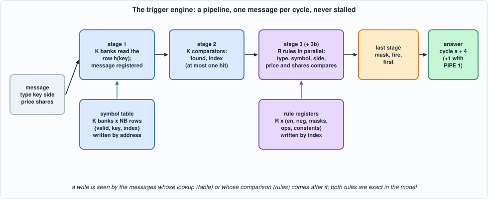
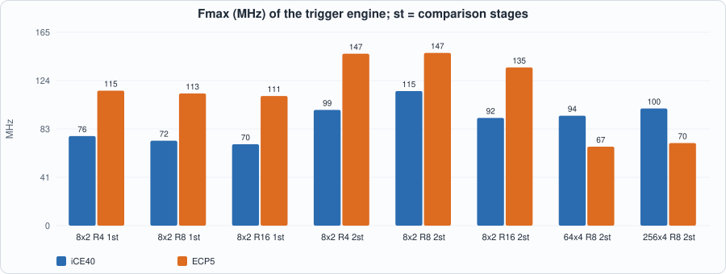
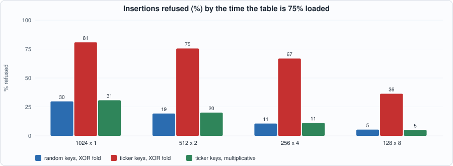

21. Triggers: Predicates on Messages, a Symbol Table, and Comparators That Meet the Clock¶
About the kestrels in this picture
- Common kestrel (Falco tinnunculus) ranges across Europe, Asia and Africa. It is famous for hovering: it faces the wind and holds its head almost still while its body adjusts, searching the ground below before it drops onto prey. A much-cited study reported that voles' scent trails reflect ultraviolet light, which kestrels may be able to see.
- Seychelles kestrel (Falco araeus) is found on the granitic islands of the Seychelles. It is a small kestrel that hunts lizards and insects in forest and around villages.
The scene is imaginary and the birds are stylised drawings.
What you will see: the book of Chapters 19 and 20 knows what is happening in the market. Part 5 decides and acts, and the first step is a trigger: a small set of conditions on each message (a price above a level, a large execution in a watched symbol, anything that is not an ADD) that says something we care about just happened. The chapter writes the specification first (a message goes through a symbol table that turns the exchange's stock key into a small index, and through R rules that are predicates on the message), then builds a pipeline that answers every message, one per cycle, in a fixed number of cycles, and shows what it costs and what limits its clock: a design that reaches 125 MHz on ECP5 (as a few in Chapters 9 and 16 did; not on iCE40) once the 32-bit comparisons are cut in two stages.
What you need to know first: Chapter 10 (hash tables and match engines), Chapter 16 (the fields of an ITCH message), Chapter 20 (a hash table in RAM, a model that states time, near-miss test keys) and Chapter 3 (reading a timing report).
What this chapter builds: rtl/trig.sv (trig and the pin wrapper trig_syn), model/trig_gold.py (the specification, the closed loop and the stimulus), tb/trig_tb.sv, tools/ch21_run.py, tools/ch21_example_a.py, tools/ch21_example_b.py, tools/mut_ch21.py, tools/make_figs_ch21.py.
Scope: what this chapter leaves out, on purpose
Predicates are a fixed template, not a language: each rule is a conjunction of a type mask, a symbol set (or any), a side (or any) and one comparison each on the price and on the shares against a constant, optionally negated; a rule that compares two message fields with each other, or one field with an arithmetic expression, is not expressible (the fixed-point signals of Chapter 22 feed richer conditions). No state: a rule sees one message; a count of messages, a moving price or a position is a later chapter. The keys are 32 bits (ITCH's stock names are 8 bytes). The table is written by address: choosing the way is the control plane's job (place() in the model is what its software does); the hardware has no insert, no delete and no duplicate check. Loads and rule writes while messages flow are in the contract (the model says exactly which messages see them), but a table write must not be issued during the NB cycles after reset in which the table is cleared, and in_valid must be 0 during reset. This is a model of a design, not a product.
What a trigger is¶
model/trig_gold.py states it in plain Python. A message is (type, key, side, price, shares). The symbol table is NB buckets of K ways; a key lives in bucket h(key) = (key ^ key>>8 ^ key>>16 ^ key>>24) mod NB (the hash of Chapter 20, on 32 bits), in any of the K ways; the table answers (found, index) or (0, 0). A rule is en, neg, a type mask over the 5 message types, symany or a mask over the symbol indexes (a message whose key is not in the table matches only a rule with symany), sideany or one side, and a comparison each on price and shares (ANY, LT, LE, EQ, NE, GE, GT, NEVER; unsigned 32 bits). A rule matches when it is enabled and its predicate xor neg is true; the answer to a message is mask (bit r = rule r matched), fire (any bit) and first (the lowest matching rule).
The model also says when. A message offered in cycle a is answered in cycle a + L, L = 4 + PIPE, with no stalls. And it says exactly which writes a message sees, because the control plane writes while messages are in flight:
- a table write in cycle
wis seen by the lookups of cyclesw + 1on (the write lands at the end of cyclew; a lookup in cyclewreads the old contents); - a rule write in cycle
cis seen by the messages offered from cyclec - 1on (a message offered in cycleahas its rules compared in cyclea + 2).
#!/usr/bin/env python3
"""Chapter 21: the specification of the trigger engine. A MESSAGE (type, key, side, price, shares) goes through a SYMBOL TABLE (key -> symbol index) and a set of RULES (predicates), and the answer is, for each message, which rules matched.
SYMBOL TABLE. NB buckets of K ways; a key lives in bucket h(key) = (key ^ key>>8 ^ key>>16 ^ key>>24) mod NB (NB a power of two), in any way. The table is WRITTEN by address (the control plane decides where: place() below does what software would do: the first free way of the key's bucket, or refuse when the bucket is full). A lookup finds the way whose valid bit is set and whose key equals the message's key and answers (found, symbol index); not found answers (0, 0).
RULES. R rules, each: en, neg, a mask over the 5 message types, symany or a mask over the NS symbol indexes (a message whose key is not in the table matches only a rule with symany), sideany or one side, and one comparison each on the price and on the shares: ANY, LT, LE, EQ, NE, GE, GT or NEVER (unsigned 32 bits) against a constant. inner = type ok and symbol ok and side ok and price ok and shares ok; the rule MATCHES when en and (inner xor neg). The answer for a message: mask (bit r = rule r matched), fire = any bit, first = the lowest matching rule (0 if none).
TIME. Everything is pipelined, one message per cycle, never stalled. A message offered in cycle a (when the engine is ready, that is, after the NB cycles that clear the table after reset) is answered in cycle a + L, L = 4 + PIPE (PIPE = 1: the 32-bit comparisons take two stages). The table as the message sees it: the writes made in cycles BEFORE a (a write in cycle w is seen by the lookups of cycles w + 1 on). The rules as the message sees them: the writes made in cycles up to a + 1 (a rule write in cycle c is seen by the messages offered from cycle c - 1: the comparison happens in cycle a + 2). Both are exact statements of the hardware, and the closed loop below applies them."""
import random
M = 0xFFFFFFFF
ADD, EXEC, CANCEL, DELETE, REPLACE = range(5)
TN = ["ADD", "EXEC", "CANCEL", "DELETE", "REPLACE"]
ANY, LT, LE, EQ, NE, GE, GT, NEVER = range(8)
ON = ["ANY", "LT", "LE", "EQ", "NE", "GE", "GT", "NEVER"]
def h(key, nb): return (key ^ (key >> 8) ^ (key >> 16) ^ (key >> 24)) & (nb - 1)
def cmp(op, x, c):
return [True, x < c, x <= c, x == c, x != c, x >= c, x > c, False][op]
def new_rule(): return dict(en=0, neg=0, tmask=0, symany=0, symmask=0, sideany=0, side=0, pxop=ANY, pxval=0, shop=ANY, shval=0)
class Table:
"""The symbol table as the hardware holds it: NB x K entries (valid, key, index)."""
def __init__(self, nb, k): self.nb, self.k = nb, k; self.e = [None] * (nb * k)
def lookup(self, key):
b = h(key, self.nb)
for w in range(self.k):
x = self.e[b * self.k + w]
if x is not None and x[0] == key: return 1, x[1]
return 0, 0
def place(self, key):
"""What the control plane does to insert a key: the address of the first free way of its bucket, or None if the bucket is full (or the key is there already)."""
b = h(key, self.nb)
if any(self.e[b * self.k + w] is not None and self.e[b * self.k + w][0] == key for w in range(self.k)): return None
for w in range(self.k):
if self.e[b * self.k + w] is None: return b * self.k + w
return None
def write(self, addr, valid, key, idx): self.e[addr] = (key, idx) if valid else None
def evaluate(rules, msg, found, idx):
"""-> (mask, fire, first) for a message that the table gave (found, idx)."""
mask = 0
for r, u in enumerate(rules):
inner = bool((u["tmask"] >> msg["t"]) & 1) and (u["symany"] or (found and (u["symmask"] >> idx) & 1)) and (u["sideany"] or msg["side"] == u["side"]) and cmp(u["pxop"], msg["px"], u["pxval"]) and cmp(u["shop"], msg["sh"], u["shval"])
if u["en"] and (inner != bool(u["neg"])): mask |= 1 << r
first = (mask & -mask).bit_length() - 1 if mask else 0
return mask, 1 if mask else 0, first
def run(cycles, nb=8, k=2, nr=4, ns=16, pipe=0):
"""Closed loop. cycles[c] = dict(msg=..., cfg=(rule index, rule dict), ld=(addr, valid, key, idx)) with any of the three missing; cycle 0 is the first cycle after reset, in which the table is being cleared for NB cycles (nothing may be offered before cycle NB). -> dict(rows, table, rules) with rows[c] = (valid, found, idx, mask, fire, first) of the answer visible in cycle c."""
assert all(not any(x in cy for x in ("msg", "cfg", "ld")) for cy in cycles[:nb]), "nothing may be offered while the table is being cleared"
L = 4 + pipe; T = Table(nb, k); rules = [new_rule() for _ in range(nr)]; n = len(cycles) + L + 4; rows = [(0, 0, 0, 0, 0, 0)] * n; look = {}
for c in range(n):
cy = cycles[c] if c < len(cycles) else {}
if c - 2 in look: # the rules as of the start of cycle a + 2: the writes of cycles up to a + 1
f, i, m = look.pop(c - 2); mask, fire, first = evaluate(rules, m, f, i); rows[c - 2 + L] = (1, f, i, mask, fire, first)
if "msg" in cy: f, i = T.lookup(cy["msg"]["key"]); look[c] = (f, i, cy["msg"]) # the table as of the start of cycle a: the writes of cycles before a
if "cfg" in cy: r, u = cy["cfg"]; rules[r] = dict(u)
if "ld" in cy: a, v, key, i = cy["ld"]; T.write(a, v, key, i)
return dict(rows=rows[:len(cycles) + L], table=T, rules=rules)
def expected_rows(res, nb): return [(c, 1 if c >= nb else 0) + r for c, r in enumerate(res["rows"])] # (cycle, ready, valid, found, idx, mask, fire, first) as the testbench prints them
def write_stim(path, cycles, seed=1):
"""One line per cycle, the layout of tb/trig_tb.sv (bit offsets: msg 0..100, cfg 101..217, ld 218..268); fields not offered are junk."""
rng = random.Random(seed)
with open(path, "w") as f:
for cy in cycles:
m = cy.get("msg"); u = cy.get("cfg"); ld = cy.get("ld")
v = 0
mm = m or dict(t=rng.randrange(5), side=rng.randrange(2), key=rng.getrandbits(32), px=rng.getrandbits(32), sh=rng.getrandbits(32))
v |= (1 if m else 0) | (mm["t"] << 1) | (mm["side"] << 4) | (mm["key"] << 5) | (mm["px"] << 37) | (mm["sh"] << 69)
r, w = u if u else (rng.randrange(16), dict(en=rng.randrange(2), neg=rng.randrange(2), tmask=rng.randrange(32), symany=rng.randrange(2), symmask=rng.getrandbits(32), sideany=rng.randrange(2), side=rng.randrange(2), pxop=rng.randrange(8), pxval=rng.getrandbits(32), shop=rng.randrange(8), shval=rng.getrandbits(32)))
v |= ((1 if u else 0) << 101) | (r << 102) | (w["en"] << 106) | (w["neg"] << 107) | (w["tmask"] << 108) | (w["symany"] << 113) | (w["sideany"] << 114) | (w["side"] << 115) | (w["pxop"] << 116) | (w["shop"] << 119) | (w["symmask"] << 122) | (w["pxval"] << 154) | (w["shval"] << 186)
a, lv, lk, li = ld if ld else (rng.getrandbits(12), rng.randrange(2), rng.getrandbits(32), rng.getrandbits(5))
v |= ((1 if ld else 0) << 218) | (a << 219) | (lk << 231) | (li << 263) | (lv << 268)
f.write("%068x\n" % v)
return len(cycles)
def gen_cycles(rng, n, nb=8, k=2, nr=4, ns=16, density=0.7, cfg_rate=0.05, ld_rate=0.06, key_space=40, wide=False, near=False):
"""Random traffic: after the NB empty cycles, messages (probability `density` per cycle) over a small space of keys, of which some are in the table; rule writes and table writes (insertions by place(), deletions, refused insertions are simply not issued) at random cycles, possibly the same cycle as a message, so the visibility rules are exercised. Prices and shares from small ranges so that the comparisons are close to their constants."""
T = Table(nb, k); out = [dict() for _ in range(nb)]; keys = [(rng.getrandbits(32) if wide else rng.randint(0, 255 * 4)) for _ in range(key_space)]; idx_of = {}
if near: base = rng.getrandbits(32); keys = [base ^ (1 << b) for b in range(32)] + [base] + [rng.getrandbits(32) for _ in range(7)] # keys one bit apart: those whose bit only changes a high bit of the hash share a bucket
def rand_rule():
return dict(en=int(rng.random() < .85), neg=int(rng.random() < .2), tmask=rng.choice([31, 31, 1, 2, 6, 24, rng.randrange(32)]), symany=int(rng.random() < .3), symmask=rng.getrandbits(ns), sideany=int(rng.random() < .5), side=rng.randrange(2),
pxop=rng.randrange(8), pxval=rng.choice([0, 50, 100, 101, 0xFFFFFFFF, rng.getrandbits(7)]), shop=rng.randrange(8), shval=rng.choice([0, 1, 10, 100, 0x10000, 0xFFFF, rng.getrandbits(8)]))
for _ in range(n):
cy = {}
if rng.random() < density:
key = rng.choice(keys) if rng.random() < .85 else rng.getrandbits(32)
cy["msg"] = dict(t=rng.randrange(5), side=rng.randrange(2), key=key, px=rng.choice([0, 49, 50, 51, 99, 100, 101, 0xFFFFFFFF, 0x10000, 0xFFFF, rng.getrandbits(7), rng.getrandbits(32)]), sh=rng.choice([0, 1, 9, 10, 11, 100, 0x10000, 0xFFFF, 0xFFFFFFFF, rng.getrandbits(8)]))
if rng.random() < cfg_rate: cy["cfg"] = (rng.randrange(nr), rand_rule())
if rng.random() < ld_rate:
key = rng.choice(keys)
if rng.random() < .3 and any(e is not None for e in T.e):
a = rng.choice([i for i, e in enumerate(T.e) if e is not None]); ok, oi = T.e[a]; cy["ld"] = (a, 0, ok, oi); T.write(a, 0, 0, 0) # a deletion: clears the valid bit, with the key and index of the entry (what software that keeps a copy of the table does)
else:
a = T.place(key)
if a is not None: i = rng.randrange(ns); cy["ld"] = (a, 1, key, i); T.write(a, 1, key, i)
out.append(cy)
return out
EDGE = [0, 1, 2, 0x7FFF, 0x8000, 0xFFFF, 0x10000, 0x10001, 0x1FFFF, 0x7FFFFFFF, 0x80000000, 0xFFFF0000, 0xFFFFFFFE, 0xFFFFFFFF]
def edge_cycles(nb=8, ns=16):
"""Directed: for every comparison, every constant in EDGE (the 16-bit and 32-bit boundaries, which the two-stage comparison splits on) against every message value in EDGE, on the price (rule 0) and on the shares (rule 1); one rule write, then the messages one per cycle, a message every cycle."""
out = [dict() for _ in range(nb)]; base = dict(en=1, neg=0, tmask=31, symany=1, symmask=0, sideany=1, side=0)
for field in ("px", "sh"):
for op in range(8):
for c in EDGE:
u = dict(new_rule(), **base); u["pxop" if field == "px" else "shop"] = op; u["pxval" if field == "px" else "shval"] = c
out.append(dict(cfg=(0 if field == "px" else 1, u))); out += [dict(), dict(), dict()]
for x in EDGE: out.append(dict(msg=dict(t=ADD, side=0, key=1, px=x if field == "px" else 0, sh=x if field == "sh" else 0)))
return out
if __name__ == "__main__":
assert [h(k, 4) for k in (0, 1, 4, 0x104, 0x10004, 0x1000004, 0x101)] == [0, 1, 0, 1, 1, 1, 0] # (key ^ key>>8 ^ key>>16 ^ key>>24) & 3, worked by hand
assert [cmp(op, 5, 5) for op in range(8)] == [True, False, True, True, False, True, False, False] and [cmp(op, 4, 5) for op in range(8)] == [True, True, True, False, True, False, False, False] and [cmp(op, 0xFFFFFFFF, 5) for op in (LT, GT)] == [False, True]
T = Table(2, 2); assert T.place(4) == 0 and (T.write(0, 1, 4, 7), T.place(6))[1] == 1 and (T.write(1, 1, 6, 9), T.place(8))[1] is None and T.place(4) is None # bucket 0 holds keys 4 and 6 (2 ways): a third key is refused, and a key already there
assert T.lookup(6) == (1, 9) and T.lookup(8) == (0, 0) and (T.write(0, 0, 0, 0), T.lookup(4))[1] == (0, 0) and T.place(8) == 0
T2 = Table(2, 2); T2.write(0, 1, 4, 3); assert T2.place(4) is None and T2.place(6) == 1 and T2.place(5) == 2 # key 4 is there and its bucket has a free way: refused as a duplicate; another key of the same bucket takes the free way; a key of the other bucket takes its first way
msg = dict(t=ADD, side=0, key=4, px=100, sh=10)
r = new_rule(); r.update(en=1, tmask=0b00001, symany=1, sideany=1) # rule 0: every ADD
q = new_rule(); q.update(en=1, tmask=0b11111, symmask=1 << 7, sideany=1, pxop=GT, pxval=99, shop=GE, shval=10) # rule 1: symbol index 7, price above 99, shares at least 10
n = new_rule(); n.update(en=1, neg=1, tmask=0b00001, symany=1, sideany=1) # rule 2: everything but an ADD
d = new_rule(); d.update(en=0, tmask=31, symany=1, sideany=1) # rule 3: disabled
assert evaluate([r, q, n, d], msg, 1, 7) == (0b0011, 1, 0) and evaluate([r, q, n, d], msg, 1, 6) == (0b0001, 1, 0) and evaluate([r, q, n, d], msg, 0, 0) == (0b0001, 1, 0) # an unknown key matches only symany rules
z0 = new_rule(); z0.update(en=1, tmask=31, symmask=1, sideany=1) # symbol index 0 only, no symany: a message whose key is NOT in the table answers (found 0, index 0) and must not match
assert evaluate([z0], msg, 0, 0) == (0, 0, 0) and evaluate([z0], msg, 1, 0) == (1, 1, 0)
z1 = new_rule(); z1.update(en=0, neg=1, tmask=0, symany=1, sideany=1) # disabled and negated, and the inner predicate false (so the negation is true): still never matches
assert evaluate([z1], msg, 1, 7) == (0, 0, 0)
z2 = new_rule(); z2.update(en=1, tmask=31, symany=1, sideany=0, side=1) # only the ask side
assert evaluate([z2], msg, 1, 7) == (0, 0, 0) and evaluate([z2], dict(msg, side=1), 1, 7) == (1, 1, 0)
z3 = new_rule(); z3.update(en=1, tmask=0b00110, symany=1, sideany=1) # only EXEC and CANCEL
assert evaluate([z3], msg, 1, 7) == (0, 0, 0) and evaluate([z3], dict(msg, t=EXEC), 1, 7)[0] == 1 and evaluate([z3], dict(msg, t=CANCEL), 1, 7)[0] == 1 and evaluate([z3], dict(msg, t=DELETE), 1, 7)[0] == 0
assert evaluate([r, q, n, d], dict(t=DELETE, side=1, key=4, px=100, sh=9), 1, 7) == (0b0100, 1, 2) and evaluate([r, q, n, d], dict(t=EXEC, side=0, key=4, px=99, sh=10), 1, 7) == (0b0100, 1, 2) # the negated rule; price 99 is not above 99; shares 9 are not at least 10 (in the first)
assert evaluate([r, q, n, d], dict(t=EXEC, side=0, key=4, px=100, sh=10), 1, 7) == (0b0110, 1, 1) and evaluate([q], dict(t=EXEC, side=0, key=4, px=100, sh=9), 1, 7) == (0, 0, 0)
# timing: NB = 2, K = 1; a table write in cycle 2, then a message in cycle 2 (does not see it), in cycle 3 (sees it); a rule write in cycle 4, messages in cycle 3 and 4 (see it: a + 2 > 4... a >= 3) and in cycle 2 (does not)
cyc = [dict(), dict(), dict(msg=dict(t=ADD, side=0, key=4, px=1, sh=1), ld=(0, 1, 4, 5)), dict(msg=dict(t=ADD, side=0, key=4, px=1, sh=1)), dict(cfg=(0, dict(en=1, neg=0, tmask=31, symany=0, symmask=1 << 5, sideany=1, side=0, pxop=ANY, pxval=0, shop=ANY, shval=0))), dict(), dict(), dict(), dict()]
z = run(cyc, nb=2, k=1, nr=1, ns=16, pipe=0)["rows"]
assert z[6] == (1, 0, 0, 0, 0, 0) and z[7] == (1, 1, 5, 1, 1, 0) and z[2] == (0, 0, 0, 0, 0, 0) # the message of cycle 2 (answered in 6): not found, rule 0 not yet; of cycle 3 (answered in 7): found (the write was in cycle 2), index 5, and it sees the rule written in cycle 4
cyc2 = [dict(), dict(), dict(msg=dict(t=ADD, side=0, key=4, px=1, sh=1)), dict(msg=dict(t=ADD, side=0, key=4, px=1, sh=1), cfg=(0, dict(en=1, neg=0, tmask=31, symany=1, symmask=0, sideany=1, side=0, pxop=ANY, pxval=0, shop=ANY, shval=0))), dict(), dict(), dict(), dict(), dict()]
y = run(cyc2, nb=2, k=1, nr=1, ns=16, pipe=0)["rows"]
assert y[6][3] == 1 and y[7][3] == 1 # a rule written in cycle 3 is seen by the message of cycle 2 (compared in cycle 4)
cyc3 = [dict(), dict(), dict(msg=dict(t=ADD, side=0, key=4, px=1, sh=1)), dict(), dict(cfg=(0, dict(en=1, neg=0, tmask=31, symany=1, symmask=0, sideany=1, side=0, pxop=ANY, pxval=0, shop=ANY, shval=0))), dict(), dict(), dict(), dict()]
assert run(cyc3, nb=2, k=1, nr=1, ns=16, pipe=0)["rows"][6][3] == 0 and run(cyc3, nb=2, k=1, nr=1, ns=16, pipe=1)["rows"][7] == (1, 0, 0, 0, 0, 0) # written in cycle 4, the message of cycle 2 compares in cycle 4 and does not see it; PIPE 1 answers a cycle later
assert [x[1] for x in expected_rows(run([dict()] * 6, nb=2, k=1, nr=1, ns=16, pipe=0), 2)[:4]] == [0, 0, 1, 1] # not ready while the table is cleared (NB = 2 cycles)
print("trig_gold hand-checked scenarios passed")
The hand-checked scenarios at the end are worked out on paper (the hash of seven keys, every comparison at, below and above its constant, the disabled and the negated rule, an unknown key against a symbol mask, and the cycle in which a table write and a rule write start to be seen). They are what checks the model; the RTL is then checked against it.
The hardware¶

Figure 21.1: the pipeline and the two tables the control plane writes.- Symbol table.
KRAM banks ofNBwords; a lookup reads the same row of allKbanks in one cycle and comparesKkeys at once (Chapter 20 read the ways one per cycle: here the time is fixed at the cost ofKcomparators). A table write is by address: bankld_addr mod K, rowld_addr / K. After reset a sweep clears the valid bits, one row per cycle in all banks (o_readyis low forNBcycles). - A stored key omits its low
log2(NB)bits. Row bitbiskey[b] ^ key[b+8] ^ key[b+16] ^ key[b+24], so two keys in the same row that agree in the other bits agree in these too: the bits are redundant (forNBup to 256). The mutation run below found this: comparing all 32 bits could not be told from comparing 31. - Rules are registers (
R xabout 110 bits), written by index. Per rule, in one cycle: the part that does not depend on price and shares (type mask indexed by the type, symbol mask indexed by the index, side), and the two comparisons against constants, each fromx < candx == c. - PIPE = 1 splits each 32-bit comparison in two stages: the halves are compared in the first (
<and==on the high 16 bits and on the low 16 bits, registered, together with the rest of the rule's inputs), and combined in the second (lt = hi_lt | (hi_eq & lo_lt),eq = hi_eq & lo_eq). The rule's fields are all read in the first of the two stages, so a rule write is seen at the same cycle either way. The latency is 4 cycles with one stage and 5 with two; the throughput is one message per cycle in both. - The last stage turns the
Rmatch bits intomask,fireandfirst(a priority encoder).
// Chapter 21: the trigger engine. A message goes through a symbol table (a hash table in K RAM banks, all K ways read at once) and R rules (predicates compared in parallel), one message per cycle, never stalled; the answer, in cycle a + 4 + PIPE for a message offered in cycle a, is the set of rules that matched. The table is written by address (the control plane places keys); the rules are written by index. The specification (and the exact rules for when a write is first seen) is in model/trig_gold.py.
module trig #(parameter int NB = 8, parameter int K = 2, parameter int R = 4, parameter int PIPE = 0) (
input logic clk, input logic rst,
input logic in_valid, input logic [2:0] in_type, input logic [31:0] in_key, input logic in_side, input logic [31:0] in_px, input logic [31:0] in_sh,
input logic cfg_valid, input logic [3:0] cfg_rule, input logic cfg_en, input logic cfg_neg, input logic [4:0] cfg_tmask, input logic cfg_symany, input logic cfg_sideany, input logic cfg_side,
input logic [2:0] cfg_pxop, input logic [2:0] cfg_shop, input logic [31:0] cfg_symmask, input logic [31:0] cfg_pxval, input logic [31:0] cfg_shval,
input logic ld_valid, input logic [11:0] ld_addr, input logic [31:0] ld_key, input logic [4:0] ld_idx, input logic ld_val,
output logic o_ready,
output logic o_valid, output logic o_found, output logic [4:0] o_idx, output logic [R-1:0] o_mask, output logic o_fire, output logic [3:0] o_first);
localparam int BW = (NB > 1) ? $clog2(NB) : 1, KB = 32 - BW, WW = 1 + KB + 5; // NB from 2 to 256: a stored key omits the low BW bits, which the row (the hash) and the other bits already give
// ---- the symbol table: K banks of NB words {valid, key without its low BW bits, index}, cleared by a sweep after reset (NB cycles); a lookup reads the same row of every bank
logic [BW-1:0] ini; logic ini_run;
wire [BW-1:0] hrow = BW'(in_key ^ (in_key >> 8) ^ (in_key >> 16) ^ (in_key >> 24));
logic [WW-1:0] rdw [0:K-1];
for (genvar g = 0; g < K; g++) begin : way
logic [WW-1:0] mem [0:NB-1]; logic [WW-1:0] rd;
always_ff @(posedge clk) begin
if (ini_run) mem[ini] <= '0;
else if (ld_valid && (ld_addr % 12'(K)) == 12'(g)) mem[BW'(ld_addr / 12'(K))] <= {ld_val, ld_key[31:BW], ld_idx};
rd <= mem[hrow];
end
assign rdw[g] = rd;
end
// the low BW bits of a key are not stored or compared (see above): say so to the lint
/* verilator lint_off UNUSEDSIGNAL */ wire unused_low_key_bits = &{1'b0, ld_key[BW-1:0], s1_key[BW-1:0]}; /* verilator lint_on UNUSEDSIGNAL */
assign o_ready = !ini_run;
// ---- stage 1: the message registered while the banks are read
logic s1_v, s1_side; logic [2:0] s1_t; logic [31:0] s1_key, s1_px, s1_sh;
always_ff @(posedge clk) begin
s1_v <= in_valid; s1_t <= in_type; s1_key <= in_key; s1_side <= in_side; s1_px <= in_px; s1_sh <= in_sh;
if (rst) begin ini_run <= 1'b1; ini <= '0; end
else if (ini_run) begin ini <= ini + 1'b1; if (ini == BW'(NB - 1)) ini_run <= 1'b0; end
end
// ---- stage 2: the K ways are compared with the key; at most one matches (keys are unique in the table)
logic [K-1:0] hitw; logic [4:0] idx_or;
always_comb begin
idx_or = '0;
for (int g = 0; g < K; g++) begin hitw[g] = rdw[g][WW-1] && (rdw[g][WW-2 -: KB] == s1_key[31:BW]); if (hitw[g]) idx_or = idx_or | rdw[g][4:0]; end
end
logic s2_v, s2_found, s2_side; logic [4:0] s2_idx; logic [2:0] s2_t; logic [31:0] s2_px, s2_sh;
always_ff @(posedge clk) begin
s2_v <= s1_v; s2_found <= |hitw; s2_idx <= idx_or; s2_t <= s1_t; s2_side <= s1_side; s2_px <= s1_px; s2_sh <= s1_sh;
end
// ---- the rules
logic r_en [0:R-1]; logic r_neg [0:R-1]; logic [4:0] r_tmask [0:R-1]; logic r_symany [0:R-1]; logic r_sideany [0:R-1]; logic r_side [0:R-1]; logic [2:0] r_pxop [0:R-1]; logic [2:0] r_shop [0:R-1]; logic [31:0] r_symmask [0:R-1]; logic [31:0] r_pxval [0:R-1]; logic [31:0] r_shval [0:R-1];
always_ff @(posedge clk) begin
if (rst) for (int r = 0; r < R; r++) r_en[r] <= 1'b0;
else if (cfg_valid) for (int r = 0; r < R; r++) if (cfg_rule == 4'(r)) begin
r_en[r] <= cfg_en; r_neg[r] <= cfg_neg; r_tmask[r] <= cfg_tmask; r_symany[r] <= cfg_symany; r_sideany[r] <= cfg_sideany; r_side[r] <= cfg_side; r_pxop[r] <= cfg_pxop; r_shop[r] <= cfg_shop;
r_symmask[r] <= cfg_symmask; r_pxval[r] <= cfg_pxval; r_shval[r] <= cfg_shval;
end
end
function automatic logic cmpf(input logic [2:0] op, input logic lt, input logic eq); // the comparison of x with c, from x < c and x == c
case (op)
3'd0: cmpf = 1'b1; 3'd1: cmpf = lt; 3'd2: cmpf = lt | eq; 3'd3: cmpf = eq; 3'd4: cmpf = !eq; 3'd5: cmpf = !lt; 3'd6: cmpf = !(lt | eq); default: cmpf = 1'b0;
endcase
endfunction
// the part of a rule that does not depend on the price and the shares
logic pre [0:R-1];
always_comb for (int r = 0; r < R; r++) pre[r] = r_tmask[r][s2_t[2:0]] && (r_symany[r] || (s2_found && r_symmask[r][s2_idx])) && (r_sideany[r] || (s2_side == r_side[r]));
// ---- stage 2 (the comparisons) and, with PIPE = 1, the stage that combines the two halves
logic [R-1:0] s3_m; logic s3_v, s3_found; logic [4:0] s3_idx;
if (PIPE == 0) begin : cmp1
always_ff @(posedge clk) begin
for (int r = 0; r < R; r++) s3_m[r] <= r_en[r] && ((pre[r] && cmpf(r_pxop[r], s2_px < r_pxval[r], s2_px == r_pxval[r]) && cmpf(r_shop[r], s2_sh < r_shval[r], s2_sh == r_shval[r])) != r_neg[r]);
s3_v <= s2_v && !rst; s3_found <= s2_found; s3_idx <= s2_idx;
end
end else begin : cmp2
logic [R-1:0] a_pre, a_en, a_neg, p_hlt, p_heq, p_llt, p_leq, q_hlt, q_heq, q_llt, q_leq; logic [2:0] a_pxop [0:R-1]; logic [2:0] a_shop [0:R-1]; logic a_v, a_found; logic [4:0] a_idx;
always_ff @(posedge clk) begin
for (int r = 0; r < R; r++) begin
a_pre[r] <= pre[r]; a_en[r] <= r_en[r]; a_neg[r] <= r_neg[r]; a_pxop[r] <= r_pxop[r]; a_shop[r] <= r_shop[r];
p_hlt[r] <= s2_px[31:16] < r_pxval[r][31:16]; p_heq[r] <= s2_px[31:16] == r_pxval[r][31:16]; p_llt[r] <= s2_px[15:0] < r_pxval[r][15:0]; p_leq[r] <= s2_px[15:0] == r_pxval[r][15:0];
q_hlt[r] <= s2_sh[31:16] < r_shval[r][31:16]; q_heq[r] <= s2_sh[31:16] == r_shval[r][31:16]; q_llt[r] <= s2_sh[15:0] < r_shval[r][15:0]; q_leq[r] <= s2_sh[15:0] == r_shval[r][15:0];
end
a_v <= s2_v; a_found <= s2_found; a_idx <= s2_idx;
end
always_ff @(posedge clk) begin
for (int r = 0; r < R; r++) s3_m[r] <= a_en[r] && ((a_pre[r] && cmpf(a_pxop[r], p_hlt[r] | (p_heq[r] & p_llt[r]), p_heq[r] & p_leq[r]) && cmpf(a_shop[r], q_hlt[r] | (q_heq[r] & q_llt[r]), q_heq[r] & q_leq[r])) != a_neg[r]);
s3_v <= a_v && !rst; s3_found <= a_found; s3_idx <= a_idx;
end
end
// ---- the last stage: which rules matched, whether any, and the first
always_ff @(posedge clk) begin
o_valid <= s3_v; o_found <= s3_found; o_idx <= s3_idx; o_mask <= s3_m; o_fire <= |s3_m;
o_first <= '0;
for (int r = R - 1; r >= 0; r--) if (s3_m[r]) o_first <= 4'(r);
end
endmodule
// trig_syn: the same design behind a handful of pins, ONLY so that it fits a chip for the place-and-route runs: the inputs (messages, rule writes and table writes, 270 bits) are shifted in serially, the outputs registered and folded into one 16-bit word.
module trig_syn #(parameter int NB = 8, parameter int K = 2, parameter int R = 4, parameter int PIPE = 0) (input logic clk, input logic rst, input logic si, input logic sh, output logic [15:0] info);
logic [269:0] iv; logic ready, ov_, fnd, fire; logic [4:0] idx; logic [R-1:0] mask; logic [3:0] first;
always_ff @(posedge clk) if (sh) iv <= {iv[268:0], si};
trig #(.NB(NB), .K(K), .R(R), .PIPE(PIPE)) u (.clk(clk), .rst(rst),
.in_valid(iv[0]), .in_type(iv[3:1]), .in_side(iv[4]), .in_key(iv[36:5]), .in_px(iv[68:37]), .in_sh(iv[100:69]),
.cfg_valid(iv[101]), .cfg_rule(iv[105:102]), .cfg_en(iv[106]), .cfg_neg(iv[107]), .cfg_tmask(iv[112:108]), .cfg_symany(iv[113]), .cfg_sideany(iv[114]), .cfg_side(iv[115]), .cfg_pxop(iv[118:116]), .cfg_shop(iv[121:119]), .cfg_symmask(iv[153:122]), .cfg_pxval(iv[185:154]), .cfg_shval(iv[217:186]),
.ld_valid(iv[218]), .ld_addr(iv[230:219]), .ld_key(iv[262:231]), .ld_idx(iv[267:263]), .ld_val(iv[268]),
.o_ready(ready), .o_valid(ov_), .o_found(fnd), .o_idx(idx), .o_mask(mask), .o_fire(fire), .o_first(first));
logic [15:0] x, r1; always_comb x = 16'(mask) ^ {first, idx, fnd, fire, ov_, ready, iv[269], 1'b0, 1'b0};
always_ff @(posedge clk) begin r1 <= x; info <= r1; end
endmodule
The tests¶
// Chapter 21 testbench for trig: line k of out/trig_stim.hex (68 hex digits) is everything offered in cycle k, cycle 0 being the first cycle after reset (the table is cleared in cycles 0 to NB - 1): message bits 0..100 (valid, type, side, key, price, shares), rule write bits 101..217 (valid, rule, en, neg, type mask, symany, sideany, side, price op, shares op, symbol mask, price value, shares value), table write bits 218..268 (valid, address, key, index, valid bit); fields not offered are junk. Before every clock edge it prints
// C <cycle> <ready> <o_valid> <found> <idx> <mask> <fire> <first> (zeros when o_valid = 0)
`timescale 1ns/1ps
`ifndef NC
`define NC 1000
`endif
`ifndef NB
`define NB 8
`endif
`ifndef K
`define K 2
`endif
`ifndef R
`define R 4
`endif
`ifndef PIPE
`define PIPE 0
`endif
module trig_tb;
localparam int NC = `NC;
logic clk = 0, rst = 1; logic [271:0] vec [0:NC-1]; int k, cyc = 0; logic run = 0;
logic in_valid = 0, in_side = 0, cfg_valid = 0, cfg_en = 0, cfg_neg = 0, cfg_symany = 0, cfg_sideany = 0, cfg_side = 0, ld_valid = 0, ld_val = 0;
logic [2:0] in_type = '0, cfg_pxop = '0, cfg_shop = '0; logic [3:0] cfg_rule = '0; logic [4:0] cfg_tmask = '0, ld_idx = '0; logic [11:0] ld_addr = '0;
logic [31:0] in_key = '0, in_px = '0, in_sh = '0, cfg_symmask = '0, cfg_pxval = '0, cfg_shval = '0, ld_key = '0;
logic o_ready, o_valid, o_found, o_fire; logic [4:0] o_idx; logic [`R-1:0] o_mask; logic [3:0] o_first;
trig #(.NB(`NB), .K(`K), .R(`R), .PIPE(`PIPE)) dut (.clk(clk), .rst(rst), .in_valid(in_valid), .in_type(in_type), .in_key(in_key), .in_side(in_side), .in_px(in_px), .in_sh(in_sh),
.cfg_valid(cfg_valid), .cfg_rule(cfg_rule), .cfg_en(cfg_en), .cfg_neg(cfg_neg), .cfg_tmask(cfg_tmask), .cfg_symany(cfg_symany), .cfg_sideany(cfg_sideany), .cfg_side(cfg_side), .cfg_pxop(cfg_pxop), .cfg_shop(cfg_shop), .cfg_symmask(cfg_symmask), .cfg_pxval(cfg_pxval), .cfg_shval(cfg_shval),
.ld_valid(ld_valid), .ld_addr(ld_addr), .ld_key(ld_key), .ld_idx(ld_idx), .ld_val(ld_val),
.o_ready(o_ready), .o_valid(o_valid), .o_found(o_found), .o_idx(o_idx), .o_mask(o_mask), .o_fire(o_fire), .o_first(o_first));
always #4 clk = ~clk;
`ifdef GARBAGE
initial begin // Icarus only: the rule registers and the table banks power up with garbage, so that a reset or a clearing sweep that forgets something is seen
for (int r = 0; r < `R; r++) begin dut.r_en[r] = 1'b1; dut.r_neg[r] = 1'b0; dut.r_tmask[r] = 5'd31; dut.r_symany[r] = 1'b1; dut.r_sideany[r] = 1'b1; dut.r_pxop[r] = 3'd0; dut.r_shop[r] = 3'd0; end
for (int i = 0; i < `NB; i++) begin
if (`K > 0) dut.way[0].mem[i] = '1; if (`K > 1) dut.way[1].mem[i] = '1; if (`K > 2) dut.way[2].mem[i] = '1; if (`K > 3) dut.way[3].mem[i] = '1;
end
end
`endif
always @(posedge clk) if (run) begin
$display("C %0d %0d %0d %0d %0d %0d %0d %0d", cyc, o_ready, o_valid, o_valid ? o_found : 1'b0, o_valid ? o_idx : 5'd0, o_valid ? o_mask : '0, o_valid ? o_fire : 1'b0, o_valid ? o_first : 4'd0);
cyc++;
end
initial begin
$readmemh("out/trig_stim.hex", vec);
repeat (3) @(negedge clk); rst = 0;
for (k = 0; k < NC; k++) begin
in_valid = vec[k][0]; in_type = vec[k][3:1]; in_side = vec[k][4]; in_key = vec[k][36:5]; in_px = vec[k][68:37]; in_sh = vec[k][100:69];
cfg_valid = vec[k][101]; cfg_rule = vec[k][105:102]; cfg_en = vec[k][106]; cfg_neg = vec[k][107]; cfg_tmask = vec[k][112:108]; cfg_symany = vec[k][113]; cfg_sideany = vec[k][114]; cfg_side = vec[k][115]; cfg_pxop = vec[k][118:116]; cfg_shop = vec[k][121:119]; cfg_symmask = vec[k][153:122]; cfg_pxval = vec[k][185:154]; cfg_shval = vec[k][217:186];
ld_valid = vec[k][218]; ld_addr = vec[k][230:219]; ld_key = vec[k][262:231]; ld_idx = vec[k][267:263]; ld_val = vec[k][268];
run = 1; @(negedge clk);
end
in_valid = 0; cfg_valid = 0; ld_valid = 0; repeat (8) @(negedge clk); $finish;
end
endmodule
#!/usr/bin/env python3
"""Chapter 21: the running designs. (1) lint; (2) the model: hand-checked scenarios and what the stimulus contains; (3) the engine against the cycle model, the answer to every message (found, index, matching rules, fire, first) in the cycle the model says, in two simulators, for five sizes (buckets, ways, rules, symbols, comparison stages), on random traffic with rule writes and table writes in the same cycles as messages, on traffic with 32-bit keys, on a message in every cycle, and on directed edge cases for every comparison."""
import os, random, subprocess, sys
from collections import Counter
sys.path.insert(0, os.path.dirname(os.path.abspath(__file__))); sys.path.insert(0, os.path.join(os.path.dirname(os.path.abspath(__file__)), "..", "model"))
import flow, trig_gold as G
R = flow.ROOT; F = ["rtl/trig.sv", "tb/trig_tb.sv"]
def rows_rtl(cyc, cfg, simu="icarus", rtl=F):
nb, k, nr, ns, pipe = cfg; n = G.write_stim(os.path.join(R, "out", "trig_stim.hex"), cyc)
o = (flow.sim_icarus if simu == "icarus" else flow.sim_verilator)(rtl, "trig_tb", defines=(f"NC={n}", f"NB={nb}", f"K={k}", f"R={nr}", f"PIPE={pipe}") + (("GARBAGE",) if simu == "icarus" else ()))[1]
try: return [tuple(int(x) for x in l.split()[1:]) for l in o.splitlines() if l.startswith("C ")]
except ValueError: return [("x",)]
def same(cyc, cfg, simu="icarus", rtl=F):
got = rows_rtl(cyc, cfg, simu, rtl); exp = G.expected_rows(G.run(cyc, *cfg), cfg[0]); return got[:len(exp)] == exp and len(got) >= len(exp)
CONFIGS = [(8, 2, 4, 16, 0), (8, 2, 4, 16, 1), (4, 4, 8, 32, 0), (16, 1, 16, 8, 1), (2, 8, 3, 32, 0)]
def make(kind, seed, n, cfg):
nb, k, nr, ns, pipe = cfg; rng = random.Random(seed)
if kind == "edge": return G.edge_cycles(nb, ns)
if kind == "near": return G.gen_cycles(rng, n, nb, k, nr, ns, key_space=40, near=True, ld_rate=0.15, density=0.9)
if kind == "wide": return G.gen_cycles(rng, n, nb, k, nr, ns, wide=True)
if kind == "dense": return G.gen_cycles(rng, n, nb, k, nr, ns, density=1.0, cfg_rate=0.2, ld_rate=0.2)
return G.gen_cycles(rng, n, nb, k, nr, ns)
KINDS = ("random", "wide", "near", "dense", "edge")
def battery():
"""The mutation runs' test: five sizes, the four kinds, Icarus. -> None or the first difference."""
for ci, cfg in enumerate(CONFIGS):
for kind in KINDS:
for seed in range(1 if kind == "edge" else 2):
if kind == "edge" and ci not in (0, 1, 3): continue
try: ok = same(make(kind, seed + ci, 200, cfg), cfg)
except Exception as x: return f"crash {type(x).__name__}"
if not ok: return f"{kind}, NB {cfg[0]}, K {cfg[1]}, R {cfg[2]}, NS {cfg[3]}, PIPE {cfg[4]}"
return None
def battery_model():
"""The model's own test: its hand-checked scenarios. -> None or a description."""
q = subprocess.run([sys.executable, "model/trig_gold.py"], cwd=R, capture_output=True, text=True, timeout=300)
return None if q.returncode == 0 else "hand-checked scenarios"
if __name__ == "__main__":
if "--battery-model" in sys.argv: print("RESULT", battery_model()); sys.exit(0)
if "--battery" in sys.argv: print("RESULT", battery()); sys.exit(0)
print("== 1. lint gate (Verilator -Wall --lint-only, Yosys 'check')")
p = subprocess.run(["verilator", "--lint-only", "-Wall", "--top-module", "trig", "rtl/trig.sv"], cwd=R, capture_output=True, text=True); w = [l for l in (p.stdout + p.stderr).splitlines() if l.startswith("%Warning") and "DECLFILENAME" not in l]
y = subprocess.run(["yosys", "-p", "read_verilog -sv rtl/trig.sv; hierarchy -top trig; proc; opt_clean; check"], cwd=R, capture_output=True, text=True).stdout
print(f" trig: Verilator warnings {len(w)}, Yosys check problems {len([l for l in y.splitlines() if 'Found and reported' in l and ' 0 problems' not in l])}")
print("\n== 2. the model (python3 model/trig_gold.py) and what the stimulus contains (NB 8, K 2, R 4, NS 16, 8 seeds of 300 cycles; edge: the directed set)")
print(" " + subprocess.run([sys.executable, "model/trig_gold.py"], cwd=R, capture_output=True, text=True).stdout.strip())
cfg0 = CONFIGS[0]
for kind in KINDS:
c = Counter(); nm = nf = nfire = nfirst = ncfg = nld = 0
for seed in range(1 if kind == "edge" else 8):
cyc = make(kind, seed, 300, cfg0); res = G.run(cyc, *cfg0)
for cy in cyc: ncfg += "cfg" in cy; nld += "ld" in cy
for r in res["rows"]:
if r[0]: nm += 1; nf += r[1]; nfire += r[4]; c[bin(r[3]).count("1")] += 1
print(f" {kind:7s} messages {nm:5d}, key found {nf:5d}, fired {nfire:5d}, rule writes {ncfg:4d}, table writes {nld:4d}; rules matched per message: " + ", ".join(f"{k} x{v}" for k, v in sorted(c.items())))
print("\n== 3. the engine against the cycle model: found, index, matching rules, fire, first, and ready, in every cycle; 4 seeds of 300 cycles per row (edge: the directed set)")
print(f" {'traffic':7s} {'NB':>3s} {'K':>2s} {'R':>3s} {'NS':>3s} {'PIPE':>4s} | {'cycles':>7s} {'answers':>8s} {'fired':>6s} | {'Icarus':>9s} {'Verilator':>10s}")
for kind in KINDS:
for cfg in CONFIGS:
ok = ncyc = nans = nfire = 0; v = "-"; seeds = 1 if kind == "edge" else 4
for seed in range(seeds):
cyc = make(kind, seed, 300, cfg); res = G.run(cyc, *cfg); ok += same(cyc, cfg); ncyc += len(cyc)
for r in res["rows"]: nans += r[0]; nfire += r[4]
if seed == 0: v = "PASS" if same(cyc, cfg, "verilator") else "FAIL"
print(f" {kind:7s} {cfg[0]:3d} {cfg[1]:2d} {cfg[2]:3d} {cfg[3]:3d} {cfg[4]:4d} | {ncyc:7d} {nans:8d} {nfire:6d} | {ok:6d} of {seeds} {v:>10s}")
To run: python3 tools/ch21_run.py (a few minutes). Recorded output:
== 1. lint gate (Verilator -Wall --lint-only, Yosys 'check')
trig: Verilator warnings 0, Yosys check problems 0
== 2. the model (python3 model/trig_gold.py) and what the stimulus contains (NB 8, K 2, R 4, NS 16, 8 seeds of 300 cycles; edge: the directed set)
trig_gold hand-checked scenarios passed
random messages 1696, key found 106, fired 765, rule writes 120, table writes 130; rules matched per message: 0 x931, 1 x637, 2 x124, 3 x4
wide messages 1704, key found 137, fired 714, rule writes 126, table writes 134; rules matched per message: 0 x990, 1 x584, 2 x126, 3 x4
near messages 2162, key found 205, fired 1169, rule writes 130, table writes 242; rules matched per message: 0 x993, 1 x809, 2 x310, 3 x49, 4 x1
dense messages 2400, key found 379, fired 1435, rule writes 500, table writes 356; rules matched per message: 0 x965, 1 x1062, 2 x330, 3 x43
edge messages 3136, key found 0, fired 1567, rule writes 224, table writes 0; rules matched per message: 0 x1569, 1 x1567
== 3. the engine against the cycle model: found, index, matching rules, fire, first, and ready, in every cycle; 4 seeds of 300 cycles per row (edge: the directed set)
traffic NB K R NS PIPE | cycles answers fired | Icarus Verilator
random 8 2 4 16 0 | 1232 865 343 | 4 of 4 PASS
random 8 2 4 16 1 | 1232 865 343 | 4 of 4 PASS
random 4 4 8 32 0 | 1216 863 409 | 4 of 4 PASS
random 16 1 16 8 1 | 1264 864 668 | 4 of 4 PASS
random 2 8 3 32 0 | 1208 869 301 | 4 of 4 PASS
wide 8 2 4 16 0 | 1232 867 286 | 4 of 4 PASS
wide 8 2 4 16 1 | 1232 867 286 | 4 of 4 PASS
wide 4 4 8 32 0 | 1216 869 406 | 4 of 4 PASS
wide 16 1 16 8 1 | 1264 868 575 | 4 of 4 PASS
wide 2 8 3 32 0 | 1208 870 300 | 4 of 4 PASS
near 8 2 4 16 0 | 1232 1086 553 | 4 of 4 PASS
near 8 2 4 16 1 | 1232 1086 553 | 4 of 4 PASS
near 4 4 8 32 0 | 1216 1077 743 | 4 of 4 PASS
near 16 1 16 8 1 | 1264 1084 840 | 4 of 4 PASS
near 2 8 3 32 0 | 1208 1082 284 | 4 of 4 PASS
dense 8 2 4 16 0 | 1232 1200 677 | 4 of 4 PASS
dense 8 2 4 16 1 | 1232 1200 677 | 4 of 4 PASS
dense 4 4 8 32 0 | 1216 1200 981 | 4 of 4 PASS
dense 16 1 16 8 1 | 1264 1200 1080 | 4 of 4 PASS
dense 2 8 3 32 0 | 1208 1200 584 | 4 of 4 PASS
edge 8 2 4 16 0 | 4040 3136 1567 | 1 of 1 PASS
edge 8 2 4 16 1 | 4040 3136 1567 | 1 of 1 PASS
edge 4 4 8 32 0 | 4036 3136 1567 | 1 of 1 PASS
edge 16 1 16 8 1 | 4048 3136 1567 | 1 of 1 PASS
edge 2 8 3 32 0 | 4034 3136 1567 | 1 of 1 PASS
Reading the output.
- Section 3: the engine equals the model in all 85 runs (5 sizes; 4 kinds of traffic with 4 seeds each, and the directed edge set once), in Icarus (the rule registers and the table banks powered up with garbage, so that a reset or a clearing sweep that misses something is seen) and in Verilator. Every answer (found, index, matching rules, fire, first) is compared in the cycle the model says, and so is
ready; a wrong time is a failure like a wrong answer. The five kinds: random traffic, with rule writes and table writes at random cycles, in the same cycle as a message so the visibility rules are exercised; wide (32-bit keys); near (keys one bit apart, which share a bucket whenever the bit does not change the hash); dense (a message in every cycle, with a write in one cycle in five); and edge: for every comparison, every constant in a set that holds the 16-bit and 32-bit boundaries against every message value in the same set, on the price and on the shares (about 3,000 answers per size). - The sizes include
K = 1(a direct-mapped table),K = 8,R = 3(not a power of two),NS = 8andNS = 32(the index width), and both comparison depths.
Running example A: what it costs and how fast it runs¶
#!/usr/bin/env python3
"""Chapter 21, example A: what the trigger engine costs and how fast it runs. trig behind its pin wrapper (270 bits shifted in serially, outputs registered and folded) for several sizes, synthesised and placed for iCE40 and ECP5 (nextpnr seed 1, asked for 300 MHz): the number of rules R (4, 8, 16) with the comparisons in one stage (PIPE = 0) and in two (PIPE = 1), and the symbol table (NB buckets x K ways: 8 x 2 = 16 symbols, 64 x 4 = 256, 256 x 4 = 1,024). The RAM cells Yosys inferred are counted (SB_RAM40_4K on iCE40; DP16KD and the LUT RAM TRELLIS_DPR16X4 on ECP5). One message per cycle at every size: the throughput is the clock."""
import os, re, subprocess, sys, concurrent.futures as cf
sys.path.insert(0, os.path.dirname(os.path.abspath(__file__))); import flow
CASES = [(8, 2, 4, 0), (8, 2, 8, 0), (8, 2, 16, 0), (8, 2, 4, 1), (8, 2, 8, 1), (8, 2, 16, 1), (64, 4, 8, 1), (256, 4, 8, 1)]
def crit(log):
i = log.rfind("Critical path report for clock"); j = log.find("Setup", i); sec = log[i:j + 300]; src = re.findall(r"Source (\S+)", sec); snk = re.findall(r"Sink (\S+)", sec); tl = re.search(r"([\d.]+) ns logic, ([\d.]+) ns routing", sec)
nm = lambda x: re.sub(r"_(SB_|TRELLIS_|LUT4|CCU2C|PFUMX|L6MUX|RAM)\S*", "", re.sub(r"\.\d+\.\d+(_RAM)?", "", x)); return nm(src[0]), nm(snk[-1]), tl.groups() if tl else ("?", "?")
def job(a):
(nb, k, r, p), fam = a
try: return a, flow.run(["rtl/trig.sv"], "trig_syn", fam, 300, tag=f"t21_{nb}_{k}_{r}_{p}_{fam}", params={"NB": nb, "K": k, "R": r, "PIPE": p})
except subprocess.TimeoutExpired: return a, {"timeout": True}
if __name__ == "__main__":
with cf.ThreadPoolExecutor(4) as ex: res = dict(ex.map(job, [(c, f) for c in CASES for f in ("ice40", "ecp5")]))
print("== resources and clock (Yosys + nextpnr, seed 1, asked for 300 MHz), behind the pin wrapper; one message per cycle")
print(f" {'NB':>3s} {'K':>2s} {'R':>3s} {'stages':>6s} {'latency':>7s} | {'iCE40 LUT':>9s} {'FF':>5s} {'EBR':>4s} {'Fmax':>6s} | {'ECP5 LUT':>8s} {'FF':>5s} {'DP16KD':>6s} {'DPR16X4':>7s} {'Fmax':>6s}")
for c in CASES:
nb, k, r, p = c; i, e = res[(c, "ice40")], res[(c, "ecp5")]
if i.get("timeout") or e.get("timeout"): print(f" {nb:3d} {k:2d} {r:3d} {p + 1:6d} {4 + p:7d} | synthesis did not finish in 15 minutes"); continue
fm = lambda x: f"{x['fmax']:6.1f}" if x.get("fmax") else "no fit"
print(f" {nb:3d} {k:2d} {r:3d} {p + 1:6d} {4 + p:7d} | {i['luts']:9d} {i['ffs']:5d} {i['cells'].get('SB_RAM40_4K', 0):4d} {fm(i):>6s} | {e['luts']:8d} {e['ffs']:5d} {e['cells'].get('DP16KD', 0):6d} {e['cells'].get('TRELLIS_DPR16X4', 0):7d} {fm(e):>6s}")
print("\n== the end points of the critical path (nextpnr's last report for the clock)")
for c in ((8, 2, 16, 0), (8, 2, 16, 1), (256, 4, 8, 1)):
for fam in ("ice40", "ecp5"):
if res[(c, fam)].get("timeout") or not res[(c, fam)].get("fmax"): continue
a, b, (lg, rt) = crit(res[(c, fam)]["pnr_log"]); print(f" NB {c[0]:3d} K {c[1]} R {c[2]:2d} PIPE {c[3]} {fam:6s} {a:24s} -> {b:24s} {lg} ns logic, {rt} ns routing")
To run: python3 tools/ch21_example_a.py (a few minutes). Recorded output:
== resources and clock (Yosys + nextpnr, seed 1, asked for 300 MHz), behind the pin wrapper; one message per cycle
NB K R stages latency | iCE40 LUT FF EBR Fmax | ECP5 LUT FF DP16KD DPR16X4 Fmax
8 2 4 1 4 | 603 1095 6 76.4 | 749 1018 0 18 115.2
8 2 8 1 4 | 1474 1554 6 72.5 | 1134 1477 0 18 112.8
8 2 16 1 4 | 2786 2469 6 69.5 | 2882 2392 0 18 110.7
8 2 4 2 5 | 625 1170 6 98.8 | 586 1093 0 18 146.7
8 2 8 2 5 | 1459 1697 6 114.9 | 985 1620 0 18 147.4
8 2 16 2 5 | 1727 2748 6 92.0 | 1939 2671 0 18 135.0
64 4 8 2 5 | 1138 1833 8 93.8 | 1438 1838 4 0 67.4
256 4 8 2 5 | 1185 1825 8 100.0 | 1666 1830 4 0 70.5
== the end points of the critical path (nextpnr's last report for the clock)
NB 8 K 2 R 16 PIPE 0 ice40 u.s2_px -> u.r_en[5] 6.4 ns logic, 7.9 ns routing
NB 8 K 2 R 16 PIPE 0 ecp5 u.s2_px -> u.s3_m 2.9 ns logic, 6.1 ns routing
NB 8 K 2 R 16 PIPE 1 ice40 u.way[1].mem.RDATA_14 -> u.idx_or 4.3 ns logic, 6.6 ns routing
NB 8 K 2 R 16 PIPE 1 ecp5 u.s2_idx -> u.cmp2.a_pre 2.6 ns logic, 4.8 ns routing
NB 256 K 4 R 8 PIPE 1 ice40 u.way[1].mem.RDATA_5 -> u.idx_or 4.5 ns logic, 5.5 ns routing
NB 256 K 4 R 8 PIPE 1 ecp5 u.way[0].mem.DOB1 -> u.s2_idx 8.8 ns logic, 5.4 ns routing

Figure 21.2: Fmax of the engine, with one and two comparison stages.- Measured, one comparison stage: 603 LUTs (4 rules) to 2,786 (16 rules) on iCE40, 70 to 76 MHz; 749 to 2,882 LUTs on ECP5, 111 to 115 MHz. The critical path is the one the stage was built to cut: iCE40, the registered price (
s2_px) through the 32-bit comparison to the rule's registers (6.4 ns of logic and 7.9 ns of routing); ECP5,s2_pxtos3_m(2.9 and 6.1). - Measured, two stages: 92 to 115 MHz on iCE40 and 135 to 147 MHz on ECP5, for one more cycle of latency. On ECP5 this is above 125 MHz for 4, 8 and 16 rules (146.7, 147.4 and 135.0 MHz); on iCE40 the best is 115 MHz (8 rules), 99 with 4 and 92 with 16 (placement noise is several MHz: the logic is the same). The cost in LUTs is not more, and not monotone: 625, 1,459 and 1,727 LUTs for 4, 8 and 16 rules (iCE40), against 603, 1,474 and 2,786 with one stage: the two halves are cheaper comparators than one 32-bit one (the synthesis tool's carry chain is not free), and the 8-rule case is within a few LUTs. 16 rules cost 1,727 LUTs against 2,786: a saving of a third at the larger size.
- The symbol table moves the limit. With 8 buckets of 2 ways (a table of 16 symbols) Yosys puts the banks in LUT RAM on ECP5 (no block RAM, 18
DPR16X4), and the engine runs at 147 MHz; with 64 x 4 (256 symbols) and 256 x 4 (1,024 symbols) the banks are block RAM (4DP16KDon ECP5, 8SB_RAM40_4Kon iCE40) and the ECP5 falls to 67 to 70 MHz: the path is the block RAM's output to theKkey comparators and the index (8.8 ns of logic, 5.4 of routing); on iCE40 it is 94 to 100 MHz (way[1].mem.RDATAtoidx_or, 4.5 and 5.5). Both table sizes cost the same logic (1,138 and 1,185 LUTs on iCE40): the table is in the RAM. The fix is one more stage that registers the RAM's output before the comparison (Exercise 3); it costs a cycle of latency and was not built. - Throughput and latency (derived): one message per cycle at every size, so at 147 MHz 147 million messages per second (ECP5, 4 rules, small table) and 115 million on iCE40; the answer comes 5 cycles (34 ns at 147 MHz) after the message is offered. The messages the feed delivers (millions per second at the busiest) are far below this: the clock is not the limit, the latency is what the stage count trades.
Running example B: the table and the rules on a workload¶
#!/usr/bin/env python3
"""Chapter 21, example B (model level): the symbol table and the rules on a workload. (1) PLACEMENT, for the engine's XOR-fold hash and for a multiplicative one (Exercise 1; model only): a table of 1,024 entries as NB x K (1,024 x 1, 512 x 2, 256 x 4, 128 x 8), keys inserted in random order by place() until the first refusal and, past it, the share of insertions refused at load 50%, 75% and 90%; for two kinds of keys: random 32-bit keys, and tickers (1 to 4 random capital letters, space padded, as 4 ASCII bytes: a stand-in for what a feed gives; the real ones are 8 bytes and not random). 20 shuffles each. (2) RULES: a set of eight rules on a synthetic message stream (200 symbols with a skewed popularity, 60 of them in the table's 'watch list' of the rules, a price that walks, sizes from a long-tailed distribution): the share of messages each rule matches and the share that fires at all."""
import os, random, statistics as st, sys
sys.path.insert(0, os.path.join(os.path.dirname(os.path.abspath(__file__)), "..", "model"))
import trig_gold as G
def ticker(rng):
n = rng.randint(1, 4); s = "".join(rng.choice("ABCDEFGHIJKLMNOPQRSTUVWXYZ") for _ in range(n)).ljust(4); return int.from_bytes(s.encode(), "big")
def keys(kind, n, rng):
out = set()
while len(out) < n: out.add(rng.getrandbits(32) if kind == "random" else ticker(rng))
return sorted(out)
def hmul(key, nb): return ((key * 0x9E3779B1) & G.M) >> (32 - (nb.bit_length() - 1)) # the multiplicative hash of Exercise 1: the top bits of key x 2^32/phi (NOT in the engine; here only to be measured)
def place_all(kind, nb, k, loads, seed, hf=G.h):
rng = random.Random(seed); ks = keys(kind, int(1024 * max(loads) + 1), rng); rng.shuffle(ks); count = [0] * nb; first = None; refused = 0; res = {}
for n, key in enumerate(ks):
b = hf(key, nb)
if count[b] >= k: refused += 1; first = first if first is not None else n
else: count[b] += 1
for L in loads:
if n + 1 == int(1024 * L): res[L] = refused
return first, res
def workload(n, seed):
rng = random.Random(seed); syms = keys("random", 200, rng); watch = set(syms[:60]); pop = [1 / (i + 1) ** 0.9 for i in range(200)]; T = G.Table(128, 4); idx = {}
for s in syms[:100]:
a = T.place(s)
if a is not None: T.write(a, 1, s, len(idx) % 32); idx[s] = len(idx) % 32
rules = [G.new_rule() for _ in range(8)]
def mk(i, **kw): rules[i].update(dict(en=1, tmask=31, symany=1, sideany=1), **kw)
wl = sum(1 << idx[s] for s in watch if s in idx)
mk(0, tmask=0b00001, pxop=G.GT, pxval=1020) # 0: an ADD above 1020
mk(1, tmask=0b00001, side=0, sideany=0, pxop=G.LT, pxval=980) # 1: a bid ADD below 980
rules[2].update(en=1, tmask=0b00110, symany=0, symmask=wl, sideany=1, shop=G.GE, shval=500) # 2: an EXEC or CANCEL of 500 or more in the watch list
rules[3].update(en=1, tmask=31, symany=0, symmask=wl, sideany=1) # 3: anything in the watch list
rules[4].update(en=1, neg=1, tmask=31, symany=0, symmask=(1 << 32) - 1, sideany=1) # 4: every symbol that is NOT in the table (neg of 'any index'; found = 0)
mk(5, tmask=0b01000, shop=G.GT, shval=0) # 5: every DELETE
mk(6, shop=G.GE, shval=2000) # 6: any message of 2000 shares or more
rules[7].update(en=1, neg=1, tmask=0b00001, symany=1, sideany=1) # 7: everything that is not an ADD
cnt = [0] * 8; fired = 0; px = 1000
for _ in range(n):
s = rng.choices(syms, pop)[0]; px += rng.choice([-1, 0, 0, 1]); sh = int(rng.paretovariate(1.2) * 20)
f, i = T.lookup(s); mask, fire, first = G.evaluate(rules, dict(t=rng.choice([0, 0, 0, 1, 2, 3, 4]), side=rng.randrange(2), key=s, px=px + rng.randint(-30, 30), sh=sh), f, i)
fired += fire
for r in range(8): cnt[r] += (mask >> r) & 1
return cnt, fired
if __name__ == "__main__":
print("== 1. placement: a table of 1,024 entries as NB x K; inserted keys until the first refusal (mean of 20 shuffles, as a % of 1,024), and the share of the insertions up to each load that were refused")
print(f" {'keys':8s} {'hash':>7s} {'NB x K':>9s} | {'first refusal at':>16s} | {'refused by 50%':>14s} {'by 75%':>8s} {'by 90%':>8s}")
for kind in ("random", "ticker"):
for hn, hf in (("xor", G.h), ("mult", hmul)):
for nb, k in ((1024, 1), (512, 2), (256, 4), (128, 8)):
fs = []; r5 = []; r75 = []; r9 = []
for sd in range(20):
f, r = place_all(kind, nb, k, (.5, .75, .9), sd, hf); fs.append(f / 1024 * 100); r5.append(r[.5] / 512 * 100); r75.append(r[.75] / 768 * 100); r9.append(r[.9] / 922 * 100)
print(f" {kind:8s} {hn:>7s} {nb:5d} x {k:<2d} | {st.mean(fs):15.1f}% | {st.mean(r5):13.2f}% {st.mean(r75):7.2f}% {st.mean(r9):7.2f}%")
cnt, fired = workload(200000, 1)
print("\n== 2. eight rules on 200,000 synthetic messages (200 symbols with skewed popularity, 100 in the table, 60 watched)")
names = ["ADD above 1020", "bid ADD below 980", "EXEC/CANCEL >= 500 in the watch list", "anything in the watch list", "key not in the table", "every DELETE", "2000 shares or more", "everything but an ADD"]
for r in range(8): print(f" rule {r}: {names[r]:40s} {cnt[r] / 2000:6.2f}% of messages")
print(f" at least one rule fires: {fired / 2000:.2f}% of messages")
To run: python3 tools/ch21_example_b.py. Recorded output:
== 1. placement: a table of 1,024 entries as NB x K; inserted keys until the first refusal (mean of 20 shuffles, as a % of 1,024), and the share of the insertions up to each load that were refused
keys hash NB x K | first refusal at | refused by 50% by 75% by 90%
random xor 1024 x 1 | 3.5% | 21.51% 29.80% 33.90%
random xor 512 x 2 | 10.9% | 10.65% 19.24% 24.09%
random xor 256 x 4 | 21.0% | 3.84% 10.59% 15.85%
random xor 128 x 8 | 37.4% | 0.84% 5.33% 10.18%
random mult 1024 x 1 | 3.7% | 21.10% 29.44% 33.99%
random mult 512 x 2 | 9.9% | 9.70% 18.22% 23.77%
random mult 256 x 4 | 21.6% | 3.61% 10.35% 15.67%
random mult 128 x 8 | 38.5% | 0.65% 5.03% 9.85%
ticker xor 1024 x 1 | 1.0% | 73.32% 80.79% 83.48%
ticker xor 512 x 2 | 3.2% | 64.47% 75.48% 79.28%
ticker xor 256 x 4 | 7.8% | 51.45% 66.78% 72.16%
ticker xor 128 x 8 | 20.8% | 17.57% 36.38% 45.27%
ticker mult 1024 x 1 | 3.7% | 22.48% 30.74% 35.16%
ticker mult 512 x 2 | 10.7% | 10.98% 20.10% 25.13%
ticker mult 256 x 4 | 23.5% | 3.79% 11.14% 16.45%
ticker mult 128 x 8 | 39.5% | 0.77% 5.08% 9.64%
== 2. eight rules on 200,000 synthetic messages (200 symbols with skewed popularity, 100 in the table, 60 watched)
rule 0: ADD above 1020 23.74% of messages
rule 1: bid ADD below 980 7.02% of messages
rule 2: EXEC/CANCEL >= 500 in the watch list 0.40% of messages
rule 3: anything in the watch list 66.23% of messages
rule 4: key not in the table 14.87% of messages
rule 5: every DELETE 14.20% of messages
rule 6: 2000 shares or more 0.40% of messages
rule 7: everything but an ADD 57.05% of messages
at least one rule fires: 97.72% of messages

Figure 21.3: insertions refused by the time a table of 1,024 entries is 75% loaded.- The XOR-fold hash fails on tickers, and the failure is large. A table of 1,024 entries as 256 buckets of 4 ways takes random 32-bit keys until 21% load before the first refusal and refuses 11% of insertions by 75% load. With tickers (1 to 4 random capital letters, space padded, as four ASCII bytes) the first refusal comes at 7.8% load, and 67% of the insertions are refused by 75% load; direct-mapped, 81%. The reason is visible in the hash: letters differ in their low five bits, the XOR of four of them is a 5-bit number, so the low 6 or 7 bits of the hash (the row) take at most a few dozen values whatever the table size. The multiplicative hash of Exercise 1 (the top bits of
key x 0x9E3779B1, here in the model only) is as good on tickers (11% refused by 75% with 256 x 4) as the XOR fold on random keys. Chapter 20's refusals under strided references were the same effect; a hash on structured keys needs to mix the bits. - Ways help, as in Chapter 20, at a price in comparators: random keys, 75% load: 30%, 19%, 11% and 5% refused for 1, 2, 4 and 8 ways.
- The rules on a workload. Eight rules (a price band, a large execution in a watch list, every DELETE, a key not in the table, everything but an ADD) on 200,000 synthetic messages: rule 3 (anything in the watch list) matches 66% of messages because the popular symbols are in the list; rule 4 (a key not in the table) 14.9%; the selective ones (an EXEC or CANCEL of 500 shares or more in the list, or any message of 2,000 shares or more) 0.4%. 97.7% of the messages fire at least one rule: a trigger set with rules like these is a filter that passes almost everything, and the choice of what to do on
fire(Chapters 22 to 25) is where the decision is. The numbers are a property of this synthetic stream and these rules.
Testing the tests¶
Two families of mutants: the RTL (74 mutants; battery: the engine against the cycle model on five sizes and five kinds of traffic) and the model (21 mutants; battery: the model's own hand-checked scenarios).
#!/usr/bin/env python3
"""Chapter 21: test the tests. Two families. (1) mutants of rtl/trig.sv, battery `ch21_run.py --battery`: the engine against the cycle model, every answer in the cycle the model says, five sizes (one and two comparison stages), on random traffic, 32-bit keys, keys one bit apart, a message in every cycle and the directed edge cases of every comparison. (2) mutants of model/trig_gold.py, battery `--battery-model`: the model's own hand-checked scenarios (the model is the oracle; what checks IT is a handful of cases worked by hand, so this family measures how complete they are)."""
import concurrent.futures as cf, os, shutil, subprocess, sys, tempfile
sys.path.insert(0, os.path.dirname(os.path.abspath(__file__)))
import flow
RTL = "rtl/trig.sv"; MOD = "model/trig_gold.py"
MUT = [
(RTL, 'the hash ignores byte 1', '(in_key ^ (in_key >> 8) ^ (in_key >> 16) ^ (in_key >> 24))', '(in_key ^ (in_key >> 16) ^ (in_key >> 24))'),
(RTL, 'the hash ignores byte 2', '(in_key ^ (in_key >> 8) ^ (in_key >> 16) ^ (in_key >> 24))', '(in_key ^ (in_key >> 8) ^ (in_key >> 24))'),
(RTL, 'the hash ignores byte 3', '(in_key ^ (in_key >> 8) ^ (in_key >> 16) ^ (in_key >> 24))', '(in_key ^ (in_key >> 8) ^ (in_key >> 16))'),
(RTL, 'the hash is of the low bits of the key only', "wire [BW-1:0] hrow = BW'(in_key ^ (in_key >> 8) ^ (in_key >> 16) ^ (in_key >> 24));", "wire [BW-1:0] hrow = BW'(in_key);"),
(RTL, 'a table write goes to the wrong row', "mem[BW'(ld_addr / 12'(K))] <= {ld_val, ld_key[31:BW], ld_idx};", "mem[BW'(ld_addr)] <= {ld_val, ld_key[31:BW], ld_idx};"),
(RTL, 'a table write ignores the valid bit', '<= {ld_val, ld_key[31:BW], ld_idx};', "<= {1'b1, ld_key[31:BW], ld_idx};"),
(RTL, 'a table write ignores the index', '<= {ld_val, ld_key[31:BW], ld_idx};', "<= {ld_val, ld_key[31:BW], 5'd0};"),
(RTL, 'a table write drops a key bit', '<= {ld_val, ld_key[31:BW], ld_idx};', "<= {ld_val, ld_key[31:BW+1], 1'b0, ld_idx};"),
(RTL, 'a table write is not conditioned on its way', "else if (ld_valid && (ld_addr % 12'(K)) == 12'(g)) mem", 'else if (ld_valid) mem'),
(RTL, 'a table write is not conditioned on ld_valid', "else if (ld_valid && (ld_addr % 12'(K)) == 12'(g)) mem", "else if ((ld_addr % 12'(K)) == 12'(g)) mem"),
(RTL, 'the clearing sweep stops one row early', "if (ini == BW'(NB - 1)) ini_run <= 1'b0;", "if (ini == BW'(NB - 2)) ini_run <= 1'b0;"),
(RTL, 'the clearing sweep writes nothing', "if (ini_run) mem[ini] <= '0;", 'if (ini_run) mem[ini] <= mem[ini];'),
(RTL, 'the engine is always ready', 'assign o_ready = !ini_run;', "assign o_ready = 1'b1;"),
(RTL, 'the lookup reads another row', 'rd <= mem[hrow];', "rd <= mem[hrow + 1'b1];"),
(RTL, 'an invalid entry can match', 'hitw[g] = rdw[g][WW-1] && (rdw[g][WW-2 -: KB] == s1_key[31:BW]);', 'hitw[g] = (rdw[g][WW-2 -: KB] == s1_key[31:BW]);'),
(RTL, 'one bit fewer of the key is compared', '(rdw[g][WW-2 -: KB] == s1_key[31:BW])', '(rdw[g][WW-2 -: KB-1] == s1_key[31:BW+1])'),
(RTL, 'only the high 16 bits of the key are compared', '(rdw[g][WW-2 -: KB] == s1_key[31:BW])', '(rdw[g][WW-2 -: 16] == s1_key[31:16])'),
(RTL, 'the index drops its top bit', 'idx_or = idx_or | rdw[g][4:0];', "idx_or = idx_or | {1'b0, rdw[g][3:0]};"),
(RTL, 'the found flag needs all the ways to match', 's2_found <= |hitw;', 's2_found <= &hitw;'),
(RTL, 'the found flag is always set', 's2_found <= |hitw;', "s2_found <= 1'b1;"),
(RTL, 'a rule write ignores the rule index', "else if (cfg_valid) for (int r = 0; r < R; r++) if (cfg_rule == 4'(r)) begin", "else if (cfg_valid) for (int r = 0; r < R; r++) if (cfg_rule == 4'(0)) begin"),
(RTL, 'a rule write is not conditioned on cfg_valid', 'else if (cfg_valid) for (int r = 0; r < R; r++) if (cfg_rule', "else if (1'b1) for (int r = 0; r < R; r++) if (cfg_rule"),
(RTL, 'a rule write does not set en', 'r_en[r] <= cfg_en; r_neg', 'r_neg'),
(RTL, 'a rule write does not set neg', 'r_neg[r] <= cfg_neg; r_tmask', 'r_tmask'),
(RTL, 'a rule write does not set the type mask', 'r_tmask[r] <= cfg_tmask; r_symany', 'r_symany'),
(RTL, 'a rule write does not set symany', 'r_symany[r] <= cfg_symany; r_sideany', 'r_sideany'),
(RTL, 'a rule write does not set sideany', 'r_sideany[r] <= cfg_sideany; r_side[r]', 'r_side[r]'),
(RTL, 'a rule write does not set the side', 'r_side[r] <= cfg_side; r_pxop', 'r_pxop'),
(RTL, 'a rule write does not set the price op', 'r_pxop[r] <= cfg_pxop; r_shop', 'r_shop'),
(RTL, 'a rule write does not set the shares op', 'r_shop[r] <= cfg_shop;\n', '\n'),
(RTL, 'a rule write does not set the symbol mask', 'r_symmask[r] <= cfg_symmask; r_pxval', 'r_pxval'),
(RTL, 'a rule write does not set the price value', 'r_pxval[r] <= cfg_pxval; r_shval', 'r_shval'),
(RTL, 'a rule write does not set the shares value', 'r_shval[r] <= cfg_shval;\n', '\n'),
(RTL, 'a rule write swaps the two values', 'r_pxval[r] <= cfg_pxval; r_shval[r] <= cfg_shval;', 'r_pxval[r] <= cfg_shval; r_shval[r] <= cfg_pxval;'),
(RTL, 'reset does not disable the rules', "if (rst) for (int r = 0; r < R; r++) r_en[r] <= 1'b0;\n else if (cfg_valid)", 'if (rst) ;\n else if (cfg_valid)'),
(RTL, 'the type mask is indexed by bit 0 only', 'r_tmask[r][s2_t[2:0]]', 'r_tmask[r][s2_t[0]]'),
(RTL, 'the type mask is indexed by the wrong type', 'r_tmask[r][s2_t[2:0]]', "r_tmask[r][s2_t[2:0] ^ 3'd1]"),
(RTL, 'symany does not admit an unknown key', '(r_symany[r] || (s2_found', "(1'b0 || (s2_found"),
(RTL, 'symany is ignored', '(r_symany[r] || (s2_found', "(1'b1 || (s2_found"),
(RTL, 'an unknown key can match a symbol mask', '(s2_found && r_symmask[r][s2_idx])', '(r_symmask[r][s2_idx])'),
(RTL, 'the symbol mask is read at the wrong index', 'r_symmask[r][s2_idx]', "r_symmask[r][s2_idx ^ 5'd1]"),
(RTL, 'sideany is ignored', '(r_sideany[r] || (s2_side == r_side[r]))', "(1'b1)"),
(RTL, 'the side test is inverted', '(s2_side == r_side[r])', '(s2_side != r_side[r])'),
(RTL, 'ANY is not always true', "3'd0: cmpf = 1'b1;", "3'd0: cmpf = lt;"),
(RTL, 'LT is LE', "3'd1: cmpf = lt;", "3'd1: cmpf = lt | eq;"),
(RTL, 'LE is LT', "3'd2: cmpf = lt | eq;", "3'd2: cmpf = lt;"),
(RTL, 'EQ is NE', "3'd3: cmpf = eq;", "3'd3: cmpf = !eq;"),
(RTL, 'NE is EQ', "3'd4: cmpf = !eq;", "3'd4: cmpf = eq;"),
(RTL, 'GE is GT', "3'd5: cmpf = !lt;", "3'd5: cmpf = !(lt | eq);"),
(RTL, 'GT is GE', "3'd6: cmpf = !(lt | eq);", "3'd6: cmpf = !lt;"),
(RTL, 'NEVER is always true', "default: cmpf = 1'b0;", "default: cmpf = 1'b1;"),
(RTL, 'a rule needs no enable', 's3_m[r] <= r_en[r] && ((pre[r] && cmpf(r_pxop', 's3_m[r] <= ((pre[r] && cmpf(r_pxop'),
(RTL, 'negation is ignored', '&& cmpf(r_shop[r], s2_sh < r_shval[r], s2_sh == r_shval[r])) != r_neg[r]);', "&& cmpf(r_shop[r], s2_sh < r_shval[r], s2_sh == r_shval[r])) != 1'b0);"),
(RTL, 'the price is compared signed', 'cmpf(r_pxop[r], s2_px < r_pxval[r],', 'cmpf(r_pxop[r], $signed(s2_px) < $signed(r_pxval[r]),'),
(RTL, 'the shares are compared signed', 'cmpf(r_shop[r], s2_sh < r_shval[r],', 'cmpf(r_shop[r], $signed(s2_sh) < $signed(r_shval[r]),'),
(RTL, 'the shares are compared with the price value', 'cmpf(r_shop[r], s2_sh < r_shval[r], s2_sh == r_shval[r])', 'cmpf(r_shop[r], s2_sh < r_pxval[r], s2_sh == r_shval[r])'),
(RTL, 'the price equality is on 31 bits', 's2_px == r_pxval[r])', 's2_px[30:0] == r_pxval[r][30:0])'),
(RTL, 'the low halves are compared with LE (price, two stages)', 'p_llt[r] <= s2_px[15:0] < r_pxval[r][15:0];', 'p_llt[r] <= s2_px[15:0] <= r_pxval[r][15:0];'),
(RTL, 'the high halves are compared on 15 bits (price, two stages)', 'p_hlt[r] <= s2_px[31:16] < r_pxval[r][31:16];', 'p_hlt[r] <= s2_px[30:16] < r_pxval[r][30:16];'),
(RTL, 'the halves are not combined (price, two stages)', 'p_hlt[r] | (p_heq[r] & p_llt[r])', 'p_hlt[r] | p_llt[r]'),
(RTL, 'equality needs only the low halves (price, two stages)', 'p_heq[r] & p_leq[r]', 'p_leq[r]'),
(RTL, 'equality needs only the high halves (price, two stages)', 'p_heq[r] & p_leq[r]', 'p_heq[r]'),
(RTL, 'the halves are not combined (shares, two stages)', 'q_hlt[r] | (q_heq[r] & q_llt[r])', 'q_hlt[r] | q_llt[r]'),
(RTL, 'equality needs only the low halves (shares, two stages)', 'q_heq[r] & q_leq[r]', 'q_leq[r]'),
(RTL, 'the low halves of the shares are not compared (two stages)', 'q_leq[r] <= s2_sh[15:0] == r_shval[r][15:0];', "q_leq[r] <= 1'b1;"),
(RTL, 'the price op is taken from the shares op (two stages)', 'a_pxop[r] <= r_pxop[r];', 'a_pxop[r] <= r_shop[r];'),
(RTL, 'the shares op is taken from the price op (two stages)', 'a_shop[r] <= r_shop[r];', 'a_shop[r] <= r_pxop[r];'),
(RTL, "the rule's enable is lost between the stages (two stages)", 'a_en[r] <= r_en[r];', "a_en[r] <= 1'b1;"),
(RTL, 'the negation is lost between the stages (two stages)', 'a_neg[r] <= r_neg[r];', "a_neg[r] <= 1'b0;"),
(RTL, 'the symbol and type part is lost between the stages (two stages)', 'a_pre[r] <= pre[r];', "a_pre[r] <= 1'b1;"),
(RTL, 'fire is the first rule only', 'o_fire <= |s3_m;', 'o_fire <= s3_m[0];'),
(RTL, 'first is the highest matching rule', "for (int r = R - 1; r >= 0; r--) if (s3_m[r]) o_first <= 4'(r);", "for (int r = 0; r < R; r++) if (s3_m[r]) o_first <= 4'(r);"),
(RTL, 'the last stage is not reset (one comparison stage)', 's3_v <= s2_v && !rst;', 's3_v <= s2_v;'),
(RTL, 'the last stage is not reset (two comparison stages)', 's3_v <= a_v && !rst;', 's3_v <= a_v;'),
(MOD, 'model: the hash ignores byte 1', 'return (key ^ (key >> 8) ^ (key >> 16) ^ (key >> 24)) & (nb - 1)', 'return (key ^ (key >> 16) ^ (key >> 24)) & (nb - 1)'),
(MOD, 'model: the hash ignores byte 3', 'return (key ^ (key >> 8) ^ (key >> 16) ^ (key >> 24)) & (nb - 1)', 'return (key ^ (key >> 8) ^ (key >> 16)) & (nb - 1)'),
(MOD, 'model: LT is LE', '[True, x < c, x <= c', '[True, x <= c, x <= c'),
(MOD, 'model: GE is GT', 'x >= c, x > c, False]', 'x > c, x > c, False]'),
(MOD, 'model: NE is EQ', 'x == c, x != c,', 'x == c, x == c,'),
(MOD, 'model: NEVER is true', 'x > c, False][op]', 'x > c, True][op]'),
(MOD, 'model: a duplicate key can be placed', 'if any(self.e[b * self.k + w] is not None and self.e[b * self.k + w][0] == key for w in range(self.k)): return None', 'if False: return None'),
(MOD, 'model: a full bucket is not refused', 'return b * self.k + w\n return None', 'return b * self.k + w\n return b * self.k'),
(MOD, 'model: a table lookup returns the wrong index', 'if x is not None and x[0] == key: return 1, x[1]', 'if x is not None and x[0] == key: return 1, x[1] + 1'),
(MOD, 'model: an unknown key matches a symbol mask', '(u["symany"] or (found and (u["symmask"] >> idx) & 1))', '(u["symany"] or ((u["symmask"] >> idx) & 1))'),
(MOD, 'model: a negated rule ignores the enable', 'if u["en"] and (inner != bool(u["neg"])): mask |= 1 << r', 'if (u["en"] or u["neg"]) and (inner != bool(u["neg"])): mask |= 1 << r'),
(MOD, 'model: first is the highest rule', 'first = (mask & -mask).bit_length() - 1 if mask else 0', 'first = mask.bit_length() - 1 if mask else 0'),
(MOD, 'model: a message sees a table write of its own cycle', 'if "msg" in cy: f, i = T.lookup(cy["msg"]["key"]); look[c] = (f, i, cy["msg"]) # the table as of the start of cycle a: the writes of cycles before a\n if "cfg" in cy', 'if "ld" in cy: a, v, key, i = cy["ld"]; T.write(a, v, key, i)\n if "msg" in cy: f, i = T.lookup(cy["msg"]["key"]); look[c] = (f, i, cy["msg"]) # the table as of the start of cycle a: the writes of cycles before a\n if "cfg" in cy'),
(MOD, 'model: the rules are read in cycle a + 1', 'if c - 2 in look:', 'if c - 1 in look:'),
(MOD, 'model: the rules are read in cycle a + 3', 'if c - 2 in look:', 'if c - 3 in look:'),
(MOD, 'model: the answer comes one cycle early', 'L = 4 + pipe;', 'L = 3 + pipe;'),
(MOD, 'model: two stages do not add a cycle', 'L = 4 + pipe;', 'L = 4;'),
(MOD, 'model: ready one cycle early', '(c, 1 if c >= nb else 0)', '(c, 1 if c >= nb - 1 else 0)'),
(MOD, 'model: an answer without a match has a first rule', 'first = (mask & -mask).bit_length() - 1 if mask else 0', 'first = (mask & -mask).bit_length() - 1 if mask else 1'),
(MOD, 'model: the side test is ignored', '(u["sideany"] or msg["side"] == u["side"])', '(True)'),
(MOD, 'model: the type test is ignored', 'bool((u["tmask"] >> msg["t"]) & 1) and', 'True and'),
]
def one(j):
f, label, old, new = j
d = tempfile.mkdtemp(prefix="mut21_")
for sub in ("rtl", "tb", "out", "model", "tools"): shutil.copytree(os.path.join(flow.ROOT, sub), os.path.join(d, sub), ignore=shutil.ignore_patterns("*.json", "*_synth.log", "*.hex", "__pycache__", "ex*_*", "t1[0-9]_*"))
p = os.path.join(d, f); s = open(p).read()
if old not in s: shutil.rmtree(d, ignore_errors=True); return label, "BAD ANCHOR (0 occurrences)"
i = s.index(old); open(p, "w").write(s[:i] + new + s[i + len(old):])
try: q = subprocess.run([sys.executable, "tools/ch21_run.py", "--battery" if f == RTL else "--battery-model"], cwd=d, capture_output=True, text=True, timeout=900); out = q.stdout.strip().splitlines()[-1] if q.stdout.strip() else "RESULT crash: " + (q.stderr.strip().splitlines() or ["?"])[-1][:70]
except subprocess.TimeoutExpired: out = "RESULT hang (timeout)"
shutil.rmtree(d, ignore_errors=True); r = out.replace("RESULT ", "")
return label, ("NOT CAUGHT" if r == "None" else "caught by: " + r[:110])
if __name__ == "__main__":
print("NOTE: this script deliberately breaks copies of the RTL and of the model. 'caught' lines are EXPECTED: they show the battery notices the mistake.")
q1 = subprocess.run([sys.executable, "tools/ch21_run.py", "--battery"], cwd=flow.ROOT, capture_output=True, text=True); q2 = subprocess.run([sys.executable, "tools/ch21_run.py", "--battery-model"], cwd=flow.ROOT, capture_output=True, text=True)
base = q1.stdout.strip().endswith("None") and q2.stdout.strip().endswith("None"); print("unmutated design and model pass their batteries:", base)
with cf.ThreadPoolExecutor(4) as ex: res = list(ex.map(one, MUT))
cnt = {RTL: [0, 0], MOD: [0, 0]}
for (f, *_), (label, st) in zip(MUT, res): print(f" {label}: {st}"); cnt[f][1] += 1; cnt[f][0] += st.startswith("caught")
for f, (c, n) in cnt.items(): print(f" {f}: caught {c} of {n}")
print(f"mutants caught: {sum(c for c, n in cnt.values())} of {len(MUT)}")
To run: python3 tools/mut_ch21.py (a minute or two). Recorded output:
NOTE: this script deliberately breaks copies of the RTL and of the model. 'caught' lines are EXPECTED: they show the battery notices the mistake.
unmutated design and model pass their batteries: True
the hash ignores byte 1: caught by: random, NB 8, K 2, R 4, NS 16, PIPE 0
the hash ignores byte 2: caught by: wide, NB 8, K 2, R 4, NS 16, PIPE 0
the hash ignores byte 3: caught by: wide, NB 8, K 2, R 4, NS 16, PIPE 0
the hash is of the low bits of the key only: caught by: random, NB 8, K 2, R 4, NS 16, PIPE 0
a table write goes to the wrong row: caught by: random, NB 8, K 2, R 4, NS 16, PIPE 0
a table write ignores the valid bit: caught by: random, NB 8, K 2, R 4, NS 16, PIPE 0
a table write ignores the index: caught by: random, NB 8, K 2, R 4, NS 16, PIPE 0
a table write drops a key bit: caught by: random, NB 8, K 2, R 4, NS 16, PIPE 0
a table write is not conditioned on its way: caught by: random, NB 8, K 2, R 4, NS 16, PIPE 0
a table write is not conditioned on ld_valid: caught by: random, NB 8, K 2, R 4, NS 16, PIPE 0
the clearing sweep stops one row early: caught by: random, NB 8, K 2, R 4, NS 16, PIPE 0
the clearing sweep writes nothing: caught by: random, NB 2, K 8, R 3, NS 32, PIPE 0
the engine is always ready: caught by: random, NB 8, K 2, R 4, NS 16, PIPE 0
the lookup reads another row: caught by: random, NB 8, K 2, R 4, NS 16, PIPE 0
an invalid entry can match: caught by: random, NB 8, K 2, R 4, NS 16, PIPE 0
one bit fewer of the key is compared: caught by: near, NB 8, K 2, R 4, NS 16, PIPE 0
only the high 16 bits of the key are compared: caught by: random, NB 8, K 2, R 4, NS 16, PIPE 0
the index drops its top bit: caught by: random, NB 4, K 4, R 8, NS 32, PIPE 0
the found flag needs all the ways to match: caught by: random, NB 8, K 2, R 4, NS 16, PIPE 0
the found flag is always set: caught by: random, NB 8, K 2, R 4, NS 16, PIPE 0
a rule write ignores the rule index: caught by: random, NB 8, K 2, R 4, NS 16, PIPE 0
a rule write is not conditioned on cfg_valid: caught by: random, NB 8, K 2, R 4, NS 16, PIPE 0
a rule write does not set en: caught by: random, NB 8, K 2, R 4, NS 16, PIPE 0
a rule write does not set neg: caught by: random, NB 8, K 2, R 4, NS 16, PIPE 0
a rule write does not set the type mask: caught by: random, NB 8, K 2, R 4, NS 16, PIPE 0
a rule write does not set symany: caught by: random, NB 8, K 2, R 4, NS 16, PIPE 0
a rule write does not set sideany: caught by: random, NB 8, K 2, R 4, NS 16, PIPE 0
a rule write does not set the side: caught by: random, NB 8, K 2, R 4, NS 16, PIPE 0
a rule write does not set the price op: caught by: random, NB 8, K 2, R 4, NS 16, PIPE 0
a rule write does not set the shares op: caught by: random, NB 8, K 2, R 4, NS 16, PIPE 0
a rule write does not set the symbol mask: caught by: random, NB 8, K 2, R 4, NS 16, PIPE 0
a rule write does not set the price value: caught by: random, NB 8, K 2, R 4, NS 16, PIPE 0
a rule write does not set the shares value: caught by: random, NB 8, K 2, R 4, NS 16, PIPE 0
a rule write swaps the two values: caught by: random, NB 8, K 2, R 4, NS 16, PIPE 0
reset does not disable the rules: caught by: random, NB 8, K 2, R 4, NS 16, PIPE 0
the type mask is indexed by bit 0 only: caught by: random, NB 8, K 2, R 4, NS 16, PIPE 0
the type mask is indexed by the wrong type: caught by: random, NB 8, K 2, R 4, NS 16, PIPE 0
symany does not admit an unknown key: caught by: random, NB 8, K 2, R 4, NS 16, PIPE 0
symany is ignored: caught by: random, NB 8, K 2, R 4, NS 16, PIPE 0
an unknown key can match a symbol mask: caught by: random, NB 8, K 2, R 4, NS 16, PIPE 0
the symbol mask is read at the wrong index: caught by: near, NB 8, K 2, R 4, NS 16, PIPE 0
sideany is ignored: caught by: random, NB 8, K 2, R 4, NS 16, PIPE 0
the side test is inverted: caught by: random, NB 8, K 2, R 4, NS 16, PIPE 0
ANY is not always true: caught by: random, NB 8, K 2, R 4, NS 16, PIPE 0
LT is LE: caught by: edge, NB 8, K 2, R 4, NS 16, PIPE 0
LE is LT: caught by: near, NB 8, K 2, R 4, NS 16, PIPE 0
EQ is NE: caught by: near, NB 8, K 2, R 4, NS 16, PIPE 0
NE is EQ: caught by: random, NB 8, K 2, R 4, NS 16, PIPE 0
GE is GT: caught by: random, NB 8, K 2, R 4, NS 16, PIPE 0
GT is GE: caught by: edge, NB 8, K 2, R 4, NS 16, PIPE 0
NEVER is always true: caught by: random, NB 8, K 2, R 4, NS 16, PIPE 0
a rule needs no enable: caught by: random, NB 8, K 2, R 4, NS 16, PIPE 0
negation is ignored: caught by: random, NB 8, K 2, R 4, NS 16, PIPE 0
the price is compared signed: caught by: random, NB 8, K 2, R 4, NS 16, PIPE 0
the shares are compared signed: caught by: random, NB 8, K 2, R 4, NS 16, PIPE 0
the shares are compared with the price value: caught by: random, NB 8, K 2, R 4, NS 16, PIPE 0
the price equality is on 31 bits: caught by: edge, NB 8, K 2, R 4, NS 16, PIPE 0
the low halves are compared with LE (price, two stages): caught by: near, NB 8, K 2, R 4, NS 16, PIPE 1
the high halves are compared on 15 bits (price, two stages): caught by: edge, NB 8, K 2, R 4, NS 16, PIPE 1
the halves are not combined (price, two stages): caught by: random, NB 8, K 2, R 4, NS 16, PIPE 1
equality needs only the low halves (price, two stages): caught by: random, NB 8, K 2, R 4, NS 16, PIPE 1
equality needs only the high halves (price, two stages): caught by: random, NB 8, K 2, R 4, NS 16, PIPE 1
the halves are not combined (shares, two stages): caught by: near, NB 8, K 2, R 4, NS 16, PIPE 1
equality needs only the low halves (shares, two stages): caught by: dense, NB 8, K 2, R 4, NS 16, PIPE 1
the low halves of the shares are not compared (two stages): caught by: random, NB 8, K 2, R 4, NS 16, PIPE 1
the price op is taken from the shares op (two stages): caught by: random, NB 8, K 2, R 4, NS 16, PIPE 1
the shares op is taken from the price op (two stages): caught by: random, NB 8, K 2, R 4, NS 16, PIPE 1
the rule's enable is lost between the stages (two stages): caught by: random, NB 8, K 2, R 4, NS 16, PIPE 1
the negation is lost between the stages (two stages): caught by: random, NB 8, K 2, R 4, NS 16, PIPE 1
the symbol and type part is lost between the stages (two stages): caught by: random, NB 8, K 2, R 4, NS 16, PIPE 1
fire is the first rule only: caught by: random, NB 8, K 2, R 4, NS 16, PIPE 0
first is the highest matching rule: caught by: random, NB 8, K 2, R 4, NS 16, PIPE 0
the last stage is not reset (one comparison stage): caught by: random, NB 8, K 2, R 4, NS 16, PIPE 0
the last stage is not reset (two comparison stages): caught by: random, NB 8, K 2, R 4, NS 16, PIPE 1
model: the hash ignores byte 1: caught by: hand-checked scenarios
model: the hash ignores byte 3: caught by: hand-checked scenarios
model: LT is LE: caught by: hand-checked scenarios
model: GE is GT: caught by: hand-checked scenarios
model: NE is EQ: caught by: hand-checked scenarios
model: NEVER is true: caught by: hand-checked scenarios
model: a duplicate key can be placed: caught by: hand-checked scenarios
model: a full bucket is not refused: caught by: hand-checked scenarios
model: a table lookup returns the wrong index: caught by: hand-checked scenarios
model: an unknown key matches a symbol mask: caught by: hand-checked scenarios
model: a negated rule ignores the enable: caught by: hand-checked scenarios
model: first is the highest rule: caught by: hand-checked scenarios
model: a message sees a table write of its own cycle: caught by: hand-checked scenarios
model: the rules are read in cycle a + 1: caught by: hand-checked scenarios
model: the rules are read in cycle a + 3: caught by: hand-checked scenarios
model: the answer comes one cycle early: caught by: hand-checked scenarios
model: two stages do not add a cycle: caught by: hand-checked scenarios
model: ready one cycle early: caught by: hand-checked scenarios
model: an answer without a match has a first rule: caught by: hand-checked scenarios
model: the side test is ignored: caught by: hand-checked scenarios
model: the type test is ignored: caught by: hand-checked scenarios
rtl/trig.sv: caught 74 of 74
model/trig_gold.py: caught 21 of 21
mutants caught: 95 of 95
Result: 95 of 95 caught, after a first run that caught 85 of 96. The eleven survivors:
| survivor of the first run | why | what was done |
|---|---|---|
| a table write ignores the valid bit; an invalid entry can match | a missing test: the generator cleared an entry with a write of key 0, so ignoring the valid bit only mattered to a message with key 0 | a deletion now writes the entry's own key and index with the valid bit 0 (what software that keeps a copy of the table does) |
| only 31 bits of the key are compared | equivalent: the dropped bit is implied by the row and the other bits | generalised: the RTL stores keys without their low log2(NB) bits; the mutant became "one bit fewer than that", caught by keys one bit apart |
| the first stage, the second stage, the output register are not reset | equivalent, each alone: the valid chain was reset at every stage, and one stage's reset flushes the rest within the three reset cycles | the RTL resets only the last valid register (in_valid must be 0 during reset: stated in the scope note); two mutants on that reset added (one per comparison depth) |
| (model) a duplicate key can be placed | a missing hand-checked scenario: no case had the key present and a free way | added |
| (model) an unknown key matches a symbol mask | a missing hand-checked scenario: no case had a symbol mask with bit 0 set and an unknown key | added |
| (model) a negated rule ignores the enable | a missing hand-checked scenario; the first scenario written for it did not tell the two apart (its predicate was true), which a second run showed, and it was rewritten with a false predicate | added |
(model) ready one cycle early; the side test ignored |
missing hand-checked scenarios | added |
The remaining RTL mutants include each comparison operator confused with its neighbour, each field of a rule write left out, the hash ignoring a byte, a table write to the wrong row or ignoring the index, the halves of a two-stage comparison combined wrongly, the signed comparison, the first rule taken as the last, and a clearing sweep that stops a row early.
What this chapter established, and what it did not¶
Established, with the tests that show it: a symbol table and R rules, pipelined at one message per cycle, whose answers equal a plain-Python specification in the cycle the specification says, including the cycle in which a table write or a rule write starts to be seen, on five kinds of traffic and five sizes in two simulators; a trigger engine at 135 to 147 MHz on ECP5 (small table, up to 16 rules, two comparison stages), 70 MHz with a block-RAM table, and 92 to 115 MHz on iCE40; the cost of the table (the logic does not grow with the table); a measured weakness: the XOR-fold hash refuses two thirds of the tickers by 75% load where a multiplicative hash would refuse a tenth; 95 of 95 mutants caught.
Not established: a clock above 100 MHz with a block-RAM table (Exercise 3); a hash that is good on structured keys in the engine (it is measured in the model only); rules that compare two fields or keep state; 8-byte keys; the table written while messages flow from software (the contract is stated and tested with hardware-timed writes, not with a real control plane); the sizing numbers outside the synthetic ticker and message generators; the triggers joined to a decision and to order entry (Chapters 22 to 25).
Self-check questions¶
- What are the fields of a message, a rule and an answer, and when does a rule match?
- Why does a message whose key is not in the table match only a rule with
symany? - In which cycle is a message offered in cycle
aanswered, and what changes with two comparison stages? - A table write is issued in cycle
wand a message in cyclew: does the message see it? And a rule write in cyclecand a message in cyclec - 1? - Why does a lookup read the same row of all
Kbanks, and what does it cost compared with Chapter 20's one way per cycle? - Why can a stored key omit its low
log2(NB)bits? For whichNB? - How is a 32-bit comparison split in two stages, and why are all of a rule's fields read in the first?
- Why is the logic of the engine almost the same for a table of 256 and of 1,024 symbols?
- Why does the ECP5 fall from 147 MHz to 70 MHz when the table moves from LUT RAM to block RAM, and what would you change?
- Why does the XOR-fold hash refuse most ticker keys at 75% load, and what does a multiplicative hash do differently?
- What does
in_validhave to be during reset, and what changed in the RTL because of it? - Name two survivors of the first mutation run and say, for each, whether it was equivalent or a missing test, and what was done.
Exercises¶
- A multiplicative hash in the engine. Replace the XOR fold by the top bits of
key x 0x9E3779B1. The partial-key saving no longer works (why?); what does the multiplier do to the clock, and how many refusals does it save on tickers? Update the model, the near-miss test (it assumes the fold) and the mutants. - A rule on two fields. Add a clause
shares >= price / 100(orshares * 100 >= priceto avoid a divider). What does it cost in LUTs and in clock, and what must the model say about overflow? - Register the RAM's output. Add a stage between the banks and the key comparators; what is the latency, what does the visibility rule for table writes become, and how far does the ECP5 clock rise with the 256 x 4 table?
- A stateful rule. Add a per-symbol counter of messages and a rule "more than N messages for this symbol since the last reset". What is the hazard between two messages of the same symbol in consecutive cycles, and how does the model state it?
- A mutant that survives. Add a mutant to
tools/mut_ch21.pythat neither battery catches. Is it equivalent, outside the contract, or is a test missing?